Ressources SIG du Département du Calvados
L’équipe SIG du Département du Calvados utilise ce site pour documenter et partager certaines de ses activités. Vous trouverez notamment sur ce site la description de traitements effectués avec l’ETL FME ou en base de données avec PostgreSQL/GIS.
Vous pouvez accéder à la page github source en suivant ce lien : github CD14
Bonne visite !
I- Membres
Jérémie Ory

Responsable du pôle SIG, jeremie.ory@calvados.fr - 02.31.57.11.51
Expertises : QGIS, postgreSQL/GIS, webmapping, modélisation, analyse spatiale, open data
Thématiques métiers : adressage, DECI, urbanisme, cadastre
Théo Grondin

Chargé de mission SIG, theo.grondin@calvados.fr - 02.31.57.12.30
Expertises : QGIS, postgreSQL/GIS, FME, lizmap, modélisation, analyse spatiale
Thématiques métiers : adressage, deci, urbanisme, cadastre
Clément Bellêtre

Chargé de mission SIG, clement.belletre@calvados.fr - 02.31.57.12.08
Expertises : QGIS, postgreSQL/GIS, lizmap
Thématiques métiers : adressage, deci
Samuel Audrain

Géomaticen, samuel.audrain@calvados.fr - 02.31.57.13.79
Expertises : QGIS, postgreSQL/GIS, lizmap, FME, cartographie
Thématiques métiers : cadastre, urbanisme, gestion des routes
II- Contact
L’équipe est disponible à l’adresse mail suivante : sig@calvados.fr
I- Accompagnement des Communes
L’adressage est une compétence communale qui consiste pour une mairie à nommer les rues et numéroter les habitations. Depuis le 21 février 2022 et la promulgation de la loi relative à la différenciation, la déconcentration, la décentralisation et portant diverses mesures de simplification (Loi 3DS), il s’agit même d’une obligation réglementaire. Les communes doivent :
Nommer chaque voie
Numéroter chaque habitation, entreprise et service public
Certifier et publier les adresses dans la Base Adresse Nationale
Disposer d’une base adresse complète et fiable répond à d’importants enjeux du quotidien :
Efficacité des services de secours
Délivrance des colis et du courrier
Déploiement du réseau de fibre optique
Repérage au quotidien avec les services de GPS
etc.
Depuis 2019, le Département du Calvados propose aux communes un accompagnement dans cette démarche d’adressage. Différents outils ont été développés afin de répondre aux besoins des communes mais aussi pour faciliter et accélerer la production et la certification des adresses dans le Calvados.
1- Rapport d’accompagnement
Afin de pouvoir présenter aux élus la démarche d’adressage et le dispositif d’accompagnement proposé par le Département du Calvados, le Pôle SIG s’est doté d’un projet de génération de rapports thématiques automatisés. Ces rapports pouvant donc être transposés à n’importe quelle autre thématique que l’adressage.
Avec la fonctionnalité d’Atlas de QGIS il est possible de générer une carte pour chaque entité géographique à partir d’un modèle. Ainsi, cet outil permet de produire une carte par commune (ou par canton, EPCI etc.) à partir d’un modèle unique. Pour l’exemple qui va suivre, la maille choisie est celle du canton de façon à pouvoir présenter aux conseillers départementaux un rapport d’avancement de l’adressage sur les communes composant leur territoire.
Dans cet exemple, le choix est de faire apparaître deux types d’informations :
Une cartographie des communes qui sont engagées dans la démarche ou qui ont terminé leur projet. (1)
Des statistiques à l’échelle du département (2) et du canton en question (3).
{kind=link}
Les statistiques sont calculées avec des expressions QGIS intégrées dans du code HTML. Dans cet exemple ci-dessous, le nombre de communes accompagnées dans le Calvados est calculé avec le champ actif de la table Communes. Il indique si la commune a engagé une démarche d’adressage avec le CD14)
Nombre de communes engagées dans l'adressage :
[%aggregate(layer:='Communes', aggregate:='count', expression:=id_com, filter:=actif ='Oui' )%]
/ [%aggregate(layer:='Communes', aggregate:='count', expression:=id_com)%]</b>,
soit [%round(100*aggregate(layer:='Communes', aggregate:='count', expression:=id_com, filter:=actif ='Oui')/aggregate(layer:='Communes', aggregate:='count', expression:=id_com),1)%]%
Ce qui donne
Nombre de communes engagées dans l\'adressage : 326 / 528 soit 61.6%
II- Application de saisie
1- Triggers et fonctions
1.1 Module d’aide à la numérotation
Il existe deux types de numérotation différents :
La numérotation classique

Cette numérotation consiste à numéroter de deux en deux avec les numéros pairs à droite de la voie et les numéros impairs à gauche. C’est le système historique en France utilisé par une majorité des communes, notamment en ville. L’inconvénient est que ce système n’est pas évolutif. En cas de nouvelles constructions s’intercalant entre deux numéros consécutifs il faut ajouter un numéro à extension (bis puis ter par exemple).
La numérotation métrique

Ce second système consiste à calculer le numéro en fonction de la distance depuis le début de la voie. Beaucoup plus évolutif car elle permet d’intercaler autant de numéros que l’on souhaite, cette numérotation permet également de donner une information précieuse sur la distance à parcourir jusqu’à la propriété. Cela est notamment très utile pour les secours ou les livreurs. Les numéros pairs et impairs peuvent être séparés de chaque côté de la voie, bien que ce ne soit pas obligatoire.
Quel que soit le type de numérotation choisi par la commune, l’application propose une aide à la numérotation automatique.
Pour la numérotation classique, une fonction soumet le numéro qu’elle considère être le plus juste à l’utilisateur en regardant les numéros déjà présents avant et après sur la voie. Au positionnement d’un premier point adresse à droite de la voie, l’outil proposera le n°2, puis pour un second le n°4 et ainsi de suite. À la création d’un point adresse entre le n°2 et le n°4, l’outil proposera un n°2 bis puis un n°2 ter etc.
DECLARE numa integer; numb integer; numc integer; sens boolean; s text; rec text; suff text[]; idvoie integer; isleft boolean; test boolean; BEGIN -- Get idvoie SELECT adresse.get_id_voie(pgeom) into idvoie; -- Aucune voie dévérouillée trouvée IF idvoie IS NULL THEN return query SELECT numc, s, idvoie; END IF; SELECT adresse.calcul_point_position(adresse.calcul_segment_proche(geom, pgeom),pgeom ) into isleft FROM adresse.voie WHERE statut_voie_num IS FALSE AND id_voie=idvoie; SELECT v.sens_numerotation into sens FROM adresse.voie v WHERE v.id_voie = idvoie; SELECT numero into numa FROM( SELECT ST_Distance(pgeom, p1.geom) as dist, p1.numero as numero FROM adresse.point_adresse p1, adresse.voie v WHERE statut_voie_num IS FALSE AND p1.id_voie = idvoie AND v.id_voie = idvoie AND (ST_LineLocatePoint(v.geom, ST_ClosestPoint(v.geom, pgeom)) - ST_LineLocatePoint(v.geom, ST_ClosestPoint(v.geom, p1.geom))) >0 AND isleft = adresse.calcul_point_position(adresse.calcul_segment_proche(v.geom, p1.geom), p1.geom) ORDER BY dist LIMIT 1) AS a; suff = ARRAY ['bis', 'ter', 'qua', 'qui', 'a', 'b', 'c', 'd', 'e']; SELECT numero into numb FROM( SELECT ST_Distance(pgeom, p1.geom) as dist, p1.numero as numero FROM adresse.point_adresse p1, adresse.voie v WHERE statut_voie_num IS FALSE AND p1.id_voie = idvoie AND v.id_voie = idvoie AND (ST_LineLocatePoint(v.geom, ST_ClosestPoint(v.geom, pgeom)) - ST_LineLocatePoint(v.geom, ST_ClosestPoint(v.geom, p1.geom))) <0 AND isleft = adresse.calcul_point_position(adresse.calcul_segment_proche(v.geom, p1.geom), p1.geom) ORDER BY dist LIMIT 1) AS b; IF numa IS NOT NULL AND numb IS NOT NULL THEN test = false; IF numb - numa > 2 THEN numc = numa+2; ELSE FOREACH rec IN ARRAY suff LOOP IF (SELECT TRUE FROM adresse.point_adresse p WHERE p.id_voie = idvoie AND p.numero = numa AND p.suffixe = rec) IS NULL AND NOT test THEN test = true; numc = numa; s = rec; END IF; END LOOP; END IF; ELSIF numa IS NOT NULL AND numb IS NULL THEN numc = numa+2; ELSIF numa IS NULL AND numb IS NOT NULL THEN IF numb - 2 >0 THEN numc = numb - 2; ELSIF numb - 2 <= 0 THEN test = false; FOREACH rec IN ARRAY suff LOOP IF (SELECT TRUE FROM adresse.point_adresse p WHERE p.id_voie = idvoie AND p.numero = numb AND p.suffixe = rec) IS NULL AND NOT test THEN test = true; numc = numb; s = rec; END IF; END LOOP; END IF; ELSIF numa IS NULL AND numb IS NULL THEN IF isleft AND NOT sens THEN numc = 1; ELSIF NOT isleft AND NOT sens THEN numc = 2; ELSIF isleft AND sens THEN numc = 2; ELSIF NOT isleft AND sens THEN numc = 1; END IF; END IF; return query SELECT numc, s, idvoie; END;
Pour la numérotation métrique, une fonction calcule la distance avec ST_Length et répartit aussi automatiquement les numéros pairs à droite et impairs à gauche. Via la variable sens, l’utilisateur peut sélectionner la voie qu’il a dessinée et la numéroter en sens inverse. L’application prend en compte cette information et calcule le nunéro “à l’envers”.
DECLARE num integer; idvoie integer; numc integer; sens boolean; res text; rec text; isleft boolean; test boolean; suff text[]; BEGIN -- Get idvoie SELECT adresse.get_id_voie(pgeom) into idvoie; -- Aucune voie dévérouillée trouvée IF idvoie IS NULL THEN return query SELECT numc, res, idvoie; END IF; SELECT v.sens_numerotation into sens FROM adresse.voie v WHERE v.id_voie = idvoie; SELECT adresse.calcul_point_position(adresse.calcul_segment_proche(geom, pgeom),pgeom) into isleft FROM adresse.voie WHERE statut_voie_num IS FALSE AND id_voie = idvoie; SELECT round(ST_Length(v.geom)*ST_LineLocatePoint(v.geom, pgeom))::integer into num FROM adresse.voie v WHERE id_voie = idvoie; suff = ARRAY ['bis', 'ter', 'qua', 'qui', 'a', 'b', 'c', 'd', 'e']; IF isleft AND num%2 = 0 AND NOT sens THEN num = num +1; ELSIF NOT isleft AND num%2 != 0 AND NOT sens THEN num = num + 1; ELSIF isleft AND num%2 != 0 AND sens THEN num = num +1; ELSIF NOT isleft AND num%2 = 0 AND sens THEN num = num + 1; END IF; test = false; WHILE NOT test LOOP IF (SELECT TRUE FROM adresse.point_adresse p WHERE p.id_voie = idvoie AND numero = num) IS NULL THEN test = true; numc = num; ELSE FOREACH rec IN ARRAY suff LOOP IF (SELECT TRUE FROM adresse.point_adresse p WHERE p.id_voie = idvoie AND p.numero = num AND p.suffixe = rec) IS NULL AND NOT test THEN test = true; numc = num; res = rec; END IF; END LOOP; END IF; num = num +2; END LOOP; RETURN query SELECT numc, res, idvoie; END;
2- Outils de contrôle
Solution SIG permettant d’affiner et de réduire le temps de contrôle de saisie des agents et d’assurer un suivi interactif des données.
Lorsque les communes effectuent la saisie dans l’application cartographique dédiée du Département, elles doivent créer un ensemble de points adresses (numérotés) et de linéaires de voies (dénommés). Cette saisie doit respecter un ensemble de règles et de normes afin d’assurer la cohérence du plan d’adressage de la commune et de ses voisines (même type de numérotation, même sens de numérotation, etc.) et d’optimiser la prise en compte de ces adresses par les organismes remplissant des missions de services aux citoyens (repérage facilité pour les secours, limite de nombre de caractères pris en compte par les GPS, etc.).
De plus, la base de données fournie doit répondre à des normes de qualité sémantiques (nom unique, etc.) et géographiques (pas d’auto intersection de linéaires, points adresses localisés dans une parcelle, etc.).
2.1 - Contrôles postgis
Liste de défauts fréquemment rencontrés :
Points adresse hors parcelles
{kind=link}
Point adresse plus près d’une autre voie que celle à laquelle il est rattaché
{kind=link}
Point adresse pair ou impair du mauvais côté de la voie
{kind=link}
Erreurs de tracé de voies (ex : auto intersection)
{kind=link}
Voie portant le même nom qu’une autre voie de la même commune
{kind=link}
Voies avec un nom trop long

Sur la base de cette liste, un ensemble de scripts SQL permet d’identifier automatiquement ces différents cas :
Détecter automatiquement des erreurs de saisie sémantiques dans les données adresse
Détecter les erreurs de saisie géométrique
Produire un bilan sur l’ensemble des données de référence.
Les scripts listés sont disponibles ici :Scripts de contrôle
Description des scripts
adresse.f_point_voie_distant()
Synopsis
Fonction trigger adresse.f_point_voie_distant() Identifie les points adresse plus près d’une autre voie que celle à laquelle ils appartiennent et retourne la distance entre le point et sa voie de rattachement.
Description
Retourne un BOOLEAN dans le champ c_erreur_dist_voie» de la table point_adresse. Retourne un Integer dans le champ « c_dist_voie» de la table point_adresse. Elle identifie ainsi la voie la plus proche dans un rayon de 10 km autour du point. Si la voie identifiée contient un « id_voie » différent de celui du point, la fonction retourne TRUE, sinon FALSE.
Elle calcule également la distance entre le point adresse et sa voie de rattachement. Cette fonction se déclenche à chaque modification de la table point_adresse au niveau de la ligne modifiée.

adresse.point_proj()
Synopsis
Fonction adresse. point_proj (ptgeom geometry, ptgeom_proj geometry); Projette un point sur la voix de rattachement du point adresse.
Description
Retourne une géométrie point dans un champ nommé « geom_pt_proj». Elle crée un point à partir de la localisation du point le plus proche du point adresse d’entrée, sur la ligne possédant le même id_voie que ce point d’entrée. Fonctions postgis mobilisées : • ST_LineLocatePoint(voie.geom, point_adresse.geom) -> float between 0 and 1 • ST_LineInterpolatePoint(voie.geom, float between 0 and 1)
{kind=link}
adresse.segment_prolong()
Synopsis
Fonction trigger adresse.segment_prolong(pgeom geometry, idv integer); Dessine un segment prolongé du point adresse au point projeté.
Description
Retourne une géométrie ligne dans un champ nommé « geom_segment_prolong». Dessine un segment du point adresse à un point projeté au 50/49e de la distance entre le point adresse et son point projeté. Fonctions postgis mobilisées : • ST_DISTANCE(ptgeom,ptgeom_proj) as distance_pt • ST_AZIMUTH(ptgeom,ptgeom_proj) as azimuth_pt • ST_TRANSLATE (ptgeom, sinus(azimuth_pt) * distance_pt + 50/49 distance_pt, cosinus(azimuth_pt)*distance_pt+50/49 distance_pt as translation_pt • ST_MakeLine(ptgeom, translation_pt)
{kind=link}
adresse.f_cote_voie()
Synopsis
Fonction adresse.f_cote_voie(idv integer, geom_segment geometry);
Indique la position du point par rapport à sa voie de rattachement : droite, gauche, indéfinie. Sinon problème (voie mal tracée, point non rattaché à une voie, …)
Description
Retourne du texte dans un champ nommé « cote_voie».
Elle identifie si le segment prolongé créé à partir du point projeté sur la voie de rattachement du point adresse, croise la ligne à gauche, à droite, ne croise pas ou croise plusieurs fois.
Fonction postgis mobilisée : • ST_LineCrossingDirection(geom_segment, voie_geom)

adresse.c_erreur_cote_parite()
Synopsis
Fonction adresse.c_erreur_cote_parite(numero integer, cote_voie geometry);
Identifie si le point adresse est pair ou impair et du mauvais côté de la voie à laquelle il est rattaché : true (erreur coté), false (pas derreur) ou indefini.
Sinon problème (voie mal tracée, point non rattaché à une voie, …)
Description
Retourne du texte dans un champ nommé « erreur_cote_parite».
Elle identifie si le côté duquel se trouve le point adresse correspond à la parité de son numéro.
Exemple Le numéro 5 impair se trouve du coté droit. • Erreur_cote_parite = True
adresse.f_erreur_cote_parite()
Synopsis
Fonction trigger adresse.f_erreur_cote_parite(); Identifie les points adresse pairs ou impairs du mauvais côté de la voie, à gauche ou à droite.
Description
Retourne un BOOLEAN dans le champ « c_erreur_cote_parite» de la table point_adresse. Elle identifie ainsi si le point adresse créé est à gauche ou à droite de la voie.
Si le point adresse est pair, mais à gauche de la voie ou si le point adresse est impair mais à droite de la voie, la fonction retourne TRUE, sinon FALSE.
Sinon indefini. Sinon problème (voie mal tracée, point non rattaché à une voie, …)
La fonction se déclenche à chaque modification du « geom » du point et s’éffectue en 4 étapes : 1- Projection du point adresse sur sa voie de rattachement • adresse.point_proj(pgeom geometry, idv integer) 2- Dessin d’un segment prolongé au 50/49 de la taille du segment initial. • adresse.point_segment_prolong(pgeom geometry, idv integer) 3- Identification du sens de croisement du segment prolongé • adresse.f_cote_voie(idv integer, geom_segment geometry) 4- Comparaison avec le numéro du point adresse d’origine. • adresse.c_erreur_cote_parite(numero integer, cote_voie geometry)

adresse.segment_extract()
Synopsis
Fonction adresse.segment_extract(table_name varchar, id_line varchar, geom_line varchar);
Extrait des segments à partir de polylignes.
Description
Retourne une table composée de 3 champs ( id bigint, id_voie integer, geom_segment geometry).
Sélectionne les nœuds des voies. Puis trace des lignes entre les différents nœuds créés. Fonctions postgis mobilisées : • ST_DumpPoints(voie_geom) • ST_makeline()

adresse.line_rotation()
Synopsis
Fonction adresse.line_rotation( lgeom geometry);
Retourne les segments au niveau de leur centroide raccourcis de 2/3
Description
Retourne une géométrie de lignes dans un champ nommé « geom_rotate».
Elle effectue une rotation à 80,1 degrès d’1/3 du segment au niveau de son centroide. Fonction postgis mobilisées : • ST_LineSubstring(lgeom, 0.333 ::real, 0.666::real) as substring • ST_centroid(lgeom) as centroid • st_rotate(substring, centroid) as rotate • ST_CollectionExtract(rotate)

adresse.f_voie_erreur_trace()
Synopsis
Fonction adresse.f_voie_erreur_trace(); Identifier les voies avec erreur de tracés (plusieurs passages de lignes, voies recourbées sur elles-mêmes, etc.)
Description
Retourne un BOOLEAN dans le champ « c_erreur_trace» de la table adresse.voie.
Elle identifie ainsi si la voie qui croise plusieurs fois un segment retourné. La voie croise plusieurs fois, la fonction retourne TRUE, sinon FALSE.
La fonction se déclenche à chaque modif/ajout du « geom » de la voie et s’effectue en 3 étapes : 1- Extrait des segments à partir de polylignes • adresse.segment_extract(table_name varchar, id_line varchar, geom_line varchar 2- Retourne les segments au niveau de leur centroides raccourcis de 2/3 • adresse.line_rotation( lgeom geometry); 3- Identification du sens de croisement du segment prolongé • ST_LineCrossingDirection(New.geom, geom_rotate)

adresse.f_bilan_pt_parcelle()
Synopsis
Fonction adresse.f_bilan_pt_parcelle(); Bilan du nombre de points adresse et dernière date de modification d’un point par parcelle.
Description
Retourne un integer dans le champ « nb_pt_adresse» et une DATE dans le champ « date_pt_modif » de la table adresse.parcelle.
Elle compte d’abord le nombre d’id point adresse par parcelle. Puis ajoute la date de modification associée nulle ou la plus récente.
La fonction se déclenche à chaque modif/ajout du « geom » du point adresse.
{kind=link}
adresse.f_commune_repet_nom_voie()
Synopsis
Fonction trigger adresse.f_commune_repet_nom_voie();
Identifie les voies portant le même nom qu’une autre voie de la même commune.
Description
Retourne un BOOLEAN dans un champ nommé « c-repet-nom_voie» de la table adresse.voie.
Elle sélectionne le nom des communes, le nom des voies et le nombre d’itération du nom des voies par commune.
Si aucun nom n’est répertorié elle retournera FALSE sinon TRUE.
Elle se déclenche à chaque création ou modification d’une valeur du champ nom.
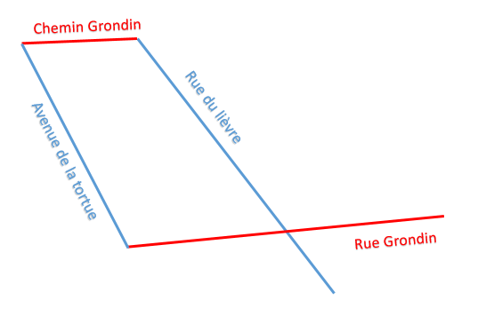{kind=link}
adresse.f_controle_longueur_nom()
Synopsis
Fonction trigger adresse.f_controle_longueur_nom() ;
Identifie les voies portant un nom de plus de 24 caractères.
Description
Retourne un BOOLEAN dans un champ nommé « c_long_nom» de la table adresse.voie.
Si le nom de la voie fait plus de 24 caractères la fonction retournera TRUE sinon FALSE
Elle se déclenche à chaque création ou modification d’une valeur du champ nom.
{kind=link}
adresse.f_voie_double_saisie()
Synopsis
Fonction trigger adresse.f_voie_double_saisie() ;
Identifie les voies saisies en 2 fois.
Description
Retourne un BOOLEAN dans un champ nommé « c_saisie_double» de la table adresse.voie.
Cette requête retourne les voies à moins de 500 mètres de la nouvelle voie créée et dont le nom est proche de celui-ci. Si aucune voie n’est répertoriée elle retournera FALSE sinon TRUE.
Elle se déclenche à chaque création ou modification sur la table voie.

2.2 - Dashboard QGis
Tableau de bord de suivi des indicateurs clés du projet, intégré aux logiciels SIG utilisés quotidiennement par les équipes et les partenaires.
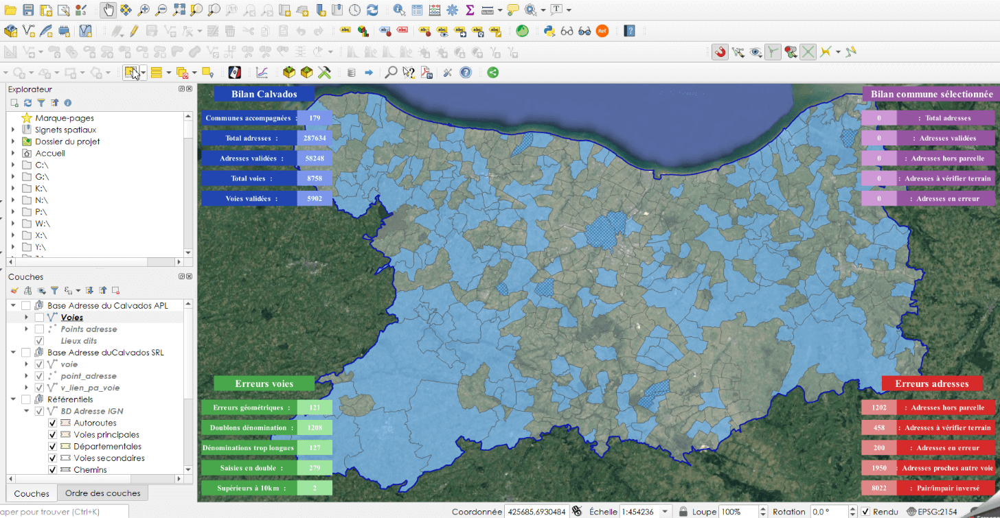{kind=link}
Un outil de suivi intégré
Au sein du pôle SIG, nous souhaitions obtenir une vue d’ensemble des données produites au fur et à mesure de l’avancement du projet. Il fallait donc identifier une solution SIG permettant d’assurer un suivi interactif des données (contrôle des erreurs de saisies et bilan de l’avancement du projet). Elle devait s’intégrer au logiciel QGIS utilisé par le chargé de mission SIG du Département et sur l’application cartographique Lizmap à disposition des communes et des partenaires.
Nous nous sommes appuyés sur une méthodologie publiée sur le site <https://plugins.QGIS.org/geopackages/5/> (Sutton, 2020) , afin de développer un « dashboard » par manipulation des étiquettes de couches QGIS.
Cette méthode permet, en créant une couche spécifique de tableau de bord, de paramétrer le style des étiquettes de la couche et via requêtes sql d’agrégation, de produire un tableau interactif de suivi des données présentes dans le projet QGIS.
Les étapes de construction du dashboard
Etape 1 : création de la couche dashboard
Créer une couche « dashboard » de polygones composée des champs suivant :

Etape 2 : créer un polygone
Éditer la couche « dashboard » et créer un polygone suivant l’emprise du projet.

Etape 3 : symbologie de la couche
Ouvrir les propriétés de la couche dashboard et dans l’onglet symbologie sélectionner ‘aucun symbole’.
Le polygone doit disparaître à l’écran.
{kind=link}
Etape 4 : paramétrer les étiquettes
Sélectionner ‘Etiquettes simples’ dans l’onglet Étiquettes. Dans le sous onglet valeur, faites une sélection par expression et inscrivez le code suivant : eval( “label_expression”)
{kind=link}
Dans le sous-onglet texte cliquer sur l’icône à droite de la police. Aller chercher type de champ et pointer vers le champ font de la table « dashboard » créée à l’étape 1.

Faire de même avec le style et pointer sur le champ style.

Faire de même avec la couleur et pointer sur le champ _**font_color**_.

Aller maintenant dans l’onglet arrière-plan.
Faire de même que précédemment avec la taille X et pointer sur le champ _**width**_.
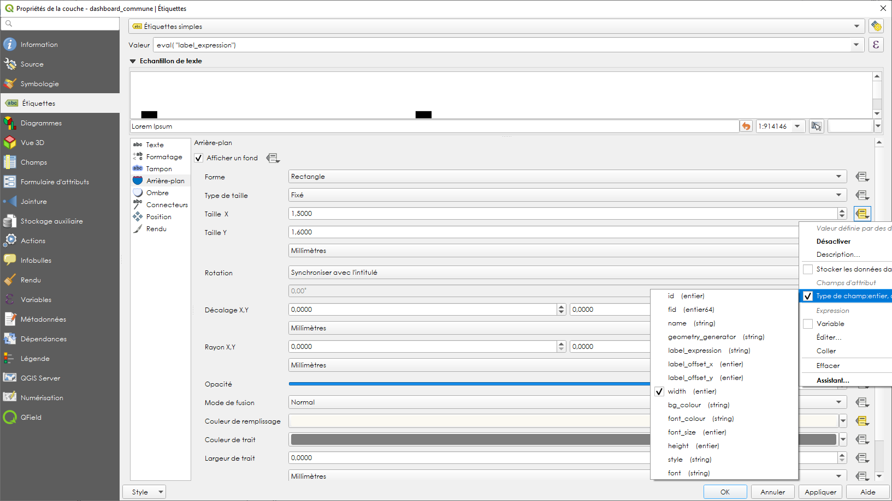{kind=link}
Faire de même que précédemment avec la taille Y et pointer sur le champ _**height**_.

Faire de même avec la couleur de remplissage et pointer sur le champ _**bg_colour**_.

Aller maintenant dans l’onglet position.
Choisir l’option quadrant de l’image ci-dessous.
Cliquer sur l’icône à droite de décalage X,Y. Choisissez cette fois-ci la sélection par expression.
Dans le constructeur de requête qui s’ouvre, indiquer la variable suivante : array( “label_offset_x” , “label_offset_y”) Appuyer sur ok.
{kind=link}
Pour finir, afin de fixer les étiquettes selon l’emprise de la carte, cocher la case générateur de géométrie et inscrire l’expression suivante : start_point( @map_extent )

Etape 5 : Remplir les champs de la table attributaire
Revenir à la table attributaire de « dashboard ».
Donner un nom qui mette en évidence l’action. Ici le titre de la première étiquette que nous appellerons fenêtre dashboard.
Puis indiquer dans le champ “label expression” l’expression qui s’affichera dans la première fenêtre dashboard, ici, simplement le titre ‘nbr pt total’

Paramétrer ensuite les champs qui vont déterminer la taille, la position, la couleur de fond et la police de la première fenêtre Dashboard.
{kind=link}
Au fur et à mesure des modifications des valeurs de champ, lorsque vous enregistrez, vous devez voir apparaître la 1ere fenêtre Dashboard et les modifications apportées.
{kind=link}
Si aucune fenêtre n’apparaît au niveau de votre projet QGIS, jouez avec les différents champs (surtout label_offset x, label_offset y), cela peut être un problème de position de la fenêtre. Si elle n’apparaît toujours pas, reprenez les étapes précédentes.
Etape 6 : Créer de nouvelles fenêtres dashboard
Pour créer une nouvelle fenêtre dashboard, passer la table attributaire en mode édition. Copier la première ligne et coller la dans la partie blanche de la table attributaire. Une deuxième ligne identique apparaît.
{kind=link}
Etape 7 : Paramétrer des requêtes dans les nouvelles lignes
Une fois la nouvelle entité créée, modifier les valeurs de champ de la seconde pour positionner la deuxième fenêtre sous la première. Vous pouvez modifier le champ label_expression avec une requête sql qgis qui vous permettra d’afficher la valeur souhaitée dans cette deuxième fenêtre.
{kind=link}
Exemple de table attributaire dashboard et rendu
Ci-dessous, nous avons organisé la table avec une fenêtre par ligne comme suit : une 1ère fenêtre avec valeur « titre » suivie d’une fenêtre affichant une valeur « expression ».
{kind=link}
{kind=link}
Exemple de requêtes utilisées
1- Total de la somme des valeurs de la colonne pt_total de la couche Infos Communes
aggregate(layer:= 'Infos Communes', aggregate:='sum', expression:=pt_total)
2- Total de la somme des valeurs de la colonne pt_total des entités sélectionnées sur la couche Infos Communes
aggregate(layer:= 'Infos Communes', aggregate:='sum', expression:=pt_total, filter:=is_selected('Infos Communes', '$'currentfeature ) )
3- Nombre de communes accompagnées (champ : actif, valeur : oui) dans la couche Infos Communes
aggregate(layer:= 'Infos Communes', aggregate:='count', expression:= actif, filter:= actif LIKE 'Oui' )
Exemple de rendu
Le dashboard est utilisé par le pôle SIG afin de contrôler les erreurs de saisies en temps réel par les communes et présenter un bilan général de l’avancement du projet.
Ci-dessous, un exemple d’affichage des bilans adresses (en haut à droite) après sélection d’une commune sous QGIS.
{kind=link}
III- Consulter et exporter les données “Adresses” depuis QGIS
1- Outils d’export
1.1 Export BAL QGIS
Création d’une commande QGIS pour exporter les données points adresses et voies par commune avec un simple clik bouton.
Etape 1 : ouverture de la console action
Ouvrir la console « action » depuis les propriétés de la couche Commune (ici la couche Accompagnement alias du projet de la table adresse.commune).
Etape 2 : paramétrer l’action
Donner un nom à l’action et coller, paramétrer l’action et inscrire le code python dans la console.

Le code python pour l’export des points adresse est le suivant :
# importer les biblihotèques from qgis.utils import iface from qgis.core import * from qgis.gui import * layer = iface.activeLayer() # garde en memoire la couche active selection = layer.selectedFeatures() # garde en memoire les entités sélectionnées for feat in selection: # boucle sur les couches sélectionnées value = feat['Code INSEE'] # garde en memoire les valeurs du champs code insee for feat in selection: value2 = feat['Commune'] # garde en memoire les valeurs du champs commune cl = QgsProject.instance().mapLayersByName('v_export_pts')[0] # garde en memoire la couche dénommée iface.setActiveLayer(cl) # active la couche cl.selectByExpression( " \"Code INSEE\" = '{}' ".format(value), QgsVectorLayer.SetSelection) # séléctionne les entités dont le champs code INSEE est égal à la valeur du champs code insee de la première couche output_path = r'G:\DDTFE\ST\POLE_SIG\01_PROJETS_SIG\12_Adressage_BAN\02_PROJETS_COMMUNES\Export\export_points\%s_Export_points.csv' % value2 # definit le chemin d'export avec la variable value2 dans le nom QgsVectorFileWriter.writeAsVectorFormat(cl, output_path, "UTF-8", driverName="CSV", onlySelected=True) # Exporte les entité selectionnées iface.messageBar().pushMessage("Export réalisé avec succès vers G/POLE_SIG/12_Adressage_BAN/02_PROJETS_COMMUNES/Export")
Le code python pour l’export des voies est le suivant :
from qgis.utils import iface from qgis.core import * from qgis.gui import * layer = iface.activeLayer() selection = layer.selectedFeatures() for feat in selection: value = feat['Code INSEE'] for feat in selection: value2 = feat['Commune'] cl = QgsProject.instance().mapLayersByName('v_export_voies')[0] iface.setActiveLayer(cl) cl.selectByExpression( " \"Code INSEE\" = '{}' ".format(value), QgsVectorLayer.SetSelection) output_path = r'G:\DDTFE\ST\POLE_SIG\01_PROJETS_SIG\12_Adressage_BAN\02_PROJETS_COMMUNES\Export\export_voies\%s_Export_voies.csv' % value2 QgsVectorFileWriter.writeAsVectorFormat(cl, output_path, "UTF-8", driverName="CSV", onlySelected=True) iface.messageBar().pushMessage("Export réalisé avec succès vers G/POLE_SIG/12_Adressage_BAN/02_PROJETS_COMMUNES/Export")
Etape 3 : test exécution de l’action
Sélectionner la couche en entrée et la commune pour laquelle vous voulez réaliser l’export. Et utiliser la commande action.

Faire un clic droit sur la carte
IV- Déposer une BAL via l’API BAN avec FME
{kind=link}
Etalab, via sa plateforme adresse.data.gouv.fr met à disposition une API permettant de déposer les mises à jour de Bases Adresses Locales dans la Base Adresse Nationale.
Documentation github de l’API de dépot.
Les communes ou leurs représentants peuvent, avec un justificatif, obtenir une habilitation à déposer les fichiers adresses BAL sur un périmètre donné.
Ainsi, le Département du Calvados, dans le cadre de sa mission d’accompagnement à l’adressage des Communes, téléverse chaque nuit les fichiers BAL communaux certifiés par les Communes partenaires.
Boite à outils
La méthodologie développée ici s’appuie sur les travaux réalisés et publiés par l’Agglomération de la Région de Compiègne : github de l’ARC.
Elle repose sur le système de gestion de base de données PostgreSQL sous licence BSD et le logiciel ETL propriétaire FME développé par SAFE Software.
Ces développements ont été réalisés sous système d’exploitation Windows.
1ère Etape : Préparation des données
L’ensemble des données adresses mises à jours et certifiées quotidiennement par les Communes dans le cadre de l’accompagnement CD14 sont stockées dans une table (ici nommée adresse.v_bal_dept) au sein de la Base de Données SIG du Département.
Ces données sont structurées selont le modèle de données BAL attendu par l’API de dépot : ressources AITF voies-adresses.
Un validateur en ligne permet de vérifier que les fichiers à déposer répondent bien à ce standart : Validateur BAL adresse.data.gouv.

Un traitement FME enregistre chaque nuit les entités adresses de cette table par commune dans des fichiers CSV nommés avec la valeurs INSEE de chaque commune ayant certifié son adressage (illustration ci-dessous)
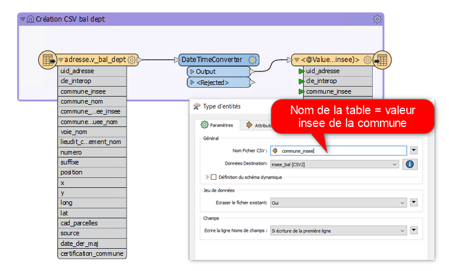{kind=link}
Une seconde table de données regroupe l’ensemble des données adresses aglomérées à la Commune. Elle contient les champs suivants :
L’INSEE de la commune
Le nom de la commune
Le nombre total de points adresses recencés le matin avant 6h00
Le nombre total de points adresses recencés le soir après 23h00
Le nombre total de points adresses modifiés dans la journée (comptabilisé le soir après 23h00)
Les 3 derniers champs de cette table sont mis à jours quotidienement comme suit :
- 1- Mise en place de fichiers Batch pour exécution des script sql via psql
2- Ex2cution des script sql suivants :
- A 6h00 du matin* :
- A 23h00 le soir* :
2e Etape : Chaîne de traitement FME
Vous pouvez télécharger la dernière version du projet FME en cliquant sur le lien ci dessous :
2.1 - Ajouter les données sources
Ajout de la première table de données à l’échelle des communes dans le projet FME.
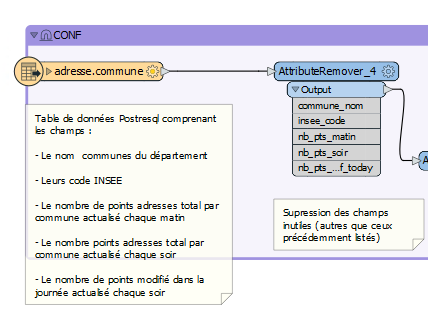{kind=link}
Supprimer les champs inutiles. Ne garder que les champs suivants :
Le nom communes du département
Leurs code INSEE
Le nombre de points adresses total par commune actualisé chaque matin
Le nombre points adresses total par commune actualisé chaque soir
Le nombre de points modifié dans la journée actualisé chaque soir
2.2 - Ajouter les jetons d’accès API
Utiliser le transformer AttributeCreator. Créer un nouveau champs “jeton” et attribuer la valeur de votre jeton d’accès à l’API.

2.3 - Sélection des communes avec mises à jour de points adresse
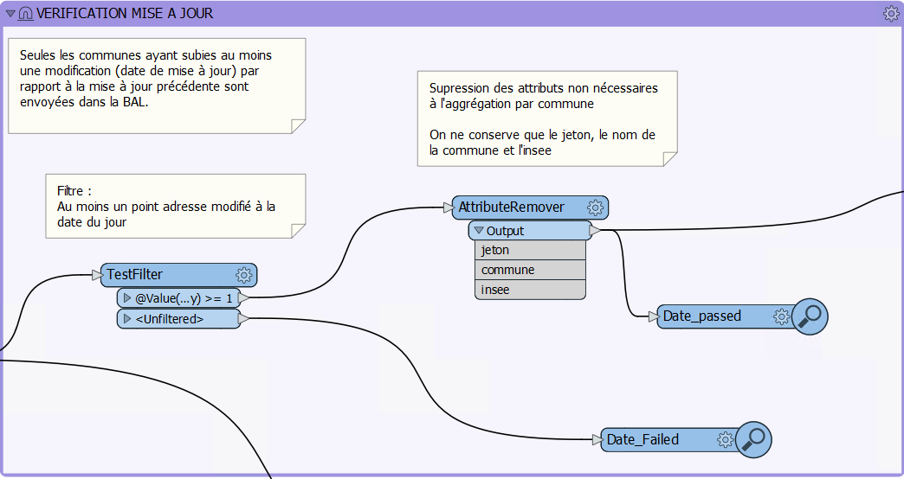{kind=link}
Dans cette partie, nous ne conserverons que les communes dont au moins 1 point a été mis à jour dans la journée.
Pour cela :
Ajouter le transformer testFilter pour ne garder que les communes dont le compte de points de la journée (pts_modif_today) est égal ou supérieur à 1.
{kind=link}
Supprimer ensuite les champs non nécessaires à l’agrégation, pour ne conserver que : le jeton, le nom de la commune et le code insee
2.4 - Sélection des communes avec suppression ou ajout de points adresse
{kind=link}
Dans cette partie, nous ne conserverons que les communes pour lesquelles des adresses ont été suprimées ou ajoutées.
Pour cela :
Ajouter le transformer testFilter pour ne garder que les communes dont le compte de point du matin (nb_pts_matin) est différent du compte de point du soir (nb_pts_soir).

Supprimer ensuite les champs non nécessaires à l’aggregation, pour ne conserver que : le jeton, le nom de la commune et le code insee
2.5 - Agrégation des communes filtrées
Une fois les deux filtres éffectués, on agrége l’ensemble des données avec le transformer Aggregator.

2.6 - Requêtes à l’API

Le traitement pour dépot des BAL à l’API se déroule comme suit :
Mise à jour des adresses d’une Commune par dépot d’une nouvelle BAL qui écrase l’ancienne : REVISION
Téléversement du fichier au format BAL : TELEVERSEMENT
Validation des données transmises : VALIDATION
Publication de la nouvelle BAL : PUBLICATION
Récupération de la Réponse de l’API : REPONSE
REVISION
1- Utliser le Transformer HTTPCaller comme suit
{kind=link}
Paramètres :
1 URL : https://plateforme.adresse.data.gouv.fr/api-depot/communes/@Value(insee)/revisions
2 Méthode HTTP : POST
- 3 En-têtes :
Nom = Authorization Valeur = Token @Value(jeton)
- 4 Corps :
Type de données à charger = Specify Upload Body Corps de la requête = { “context”: { “nomComplet”: “A remplacer”, “organisation”: “A remplacer” } } Type de contenu = json
- 5 Réponse :
Enregistrer le corps de la réponse dans = Attribut Attribut de réponse = _response_body
2- Récupérer l’ID dans la réponse avec les transformer JSONFragmenter et Tester comme suit :
{kind=link}
TELEVERSEMENT
1- Utliser le Transformer HTTPCaller comme suit
{kind=link}
Paramètres :
1 URL : https://plateforme.adresse.data.gouv.fr/api-depot/revisions/@Value(_response_body)/files/bal
2 Méthode HTTP : PUT
- 4 Paramètres complémentaires de la requête :
Nom = Content-MD5 Valeur = 1234567890abcdedf1234567890abcdedf
- 4 En-têtes :
Nom = Authorization Valeur = Token @Value(jeton)
- 5 Corps :
Type de données à charger = Envoyer à partir d’un fichier Chemin du fichier à charger = * Le chemin vers les fichiers CSV adresse par commune créés en partie I *Type de contenu = text/csv
- 6 Réponse :
Enregistrer le corps de la réponse dans = Attribut Attribut de réponse = _response_body
2- Récupérer l’ID dans la réponse avec les transformer JSONFragmenter et Tester comme précédemment pour la révision
VALIDATION
1- Utliser le Transformer HTTPCaller comme suit

Paramètres :
1 URL : https://plateforme.adresse.data.gouv.fr/api-depot/revisions/@Value(_response_body)/compute
2 Méthode HTTP : POST
2- Récupérer l’ID dans la réponse avec les transformer JSONFragmenter et Tester comme précédemment pour la validation
PUBLICATION
1- Utliser le Transformer HTTPCaller comme suit

Paramètres :
1 URL : https://plateforme.adresse.data.gouv.fr/api-depot/revisions/@Value(_response_body)/publish
2- Récupérer l’ID dans la réponse avec les transformer JSONFragmenter et Tester comme précédemment pour la validation
A la fin de cette étape, vos adresses sont publiées sur la BAN.
REPONSE
1- Utliser le Transformer HTTPCaller comme suit
{kind=link}
Paramètres :
1 URL : https://plateforme.adresse.data.gouv.fr/api-depot/communes/@Value(insee)/current-revision
2 Méthode HTTP : GET
2- Récupérer l’ID dans la réponse avec les transformer JSONFragmenter et Tester comme précédemment pour la validation
2.6 - Mail récapitulatif
{kind=link}
Suite à la réponse de l’API, on supprime les champs inutiles pour ne conserver que :
Commune
Insee
response_body
Avec le Transformer StringSearcher, on extrait par expression régulière les valeurs de chiffres après rowsCounts. L’idée est ici d’extraire le nombre d’adresses publiées de la réponse API.
(?<=rowsCount”:)[w+.-]+
On créé ensuite un nouvel attribut comprenant le nombre de points extraits de la réponse suivi du texte que l’on souhaite ajouter.

Puis, on met en place une liste sur le champ précédemment créé et on va concatener la liste au niveau des sauts de lignes. Ceci pour n’obtenir qu’une seule entité à intégrer dans le mail.
{kind=link}
Enfin, avec le transformer Emailer, on envoie dans le corps du mail la valeur de concatenation de liste.

2.7 - Intégration du compte de points publiés dans la base de données

Après identification du compte de points publiés, on supprime les champs inutiles pour ne garder que :
Le nombre de points publiés extrait par StringSearcher (_rows)
Le code INSEE de la commune
On crée ensuite un champs date_depot_api avec la date du jour (AttributeCreator : @DateTimeFormat(@DateTimeNow(local), %Y%m%d)).
On insère finalement les données dans la table commune citée en partie I au niveau de la correspondance insee (DatabaseUpdater).

3e Etape : Mailing automatique
En complément de la chaine de traitement détaillée précédemment, un bilan hebdomadaire est réalisé sur la base de données adresse du Département.
Ce bilan vise à recenser le détail des points adresses modifiés, supprimés et ajoutés sur les communes ayant publié leur BAN durant les 7 derniers jours.
Il est transmis chaque début de semaine au chef de projet adresse du Département et aux partennaires du projet (La poste, DGFIP, …).
3.1 - Enregistrement des données adresses
Chaque lundi à 4h (n7) et à 5h du matin (n0) :
Enregistrement au format CSV d’une table de données des adresses sur les communes publiées. Elle contient les champs suivants :
L’identifiant du point
Le nom de la commune et son code INSEE
L’adresse complète du point
copy (select a.id_point, a.commune_nom, a.insee_code, a.adresse_complete from adresse.v_point_adresse a, adresse.v_communes_publiees b where a.insee_code = b.insee_code ) TO 'D:\BD_adresse\bakup_adresses\v_point_adresse_dimanche.csv' DELIMITER ',' CSV HEADER NULL as 'NULL';
Enregistrement au format CSV d’une table de données des adresses modifiées durant les 7 derniers jours sur les communes publiées. Elle contient les champs suivants :
L’identifiant du point
Le nom de la commune et son code INSEE
L’adresse complète du point
La date de modification du point
copy (select a.id_point, a.date_modif, a.commune_nom, a.insee_code, a.adresse_complete from adresse.v_point_adresse a, adresse.v_communes_publiees b where a.insee_code = b.insee_code and (a.date_modif > current_date - integer '7')) TO 'D:\BD_adresse\bakup_adresses\v_point_adresse_dimanche_modif.csv' DELIMITER ',' CSV HEADER NULL as 'NULL';
Enregistrement au format CSV d’une table de données des adresses créées durant les 7 derniers jours sur les communes publiées. Elle contient les champs suivants :
L’identifiant du point
Le nom de la commune et son code INSEE
L’adresse complète du point
La date de création du point
copy (select a.id_point, a.date_creation, a.commune_nom, a.insee_code, a.adresse_complete from adresse.v_point_adresse a, adresse.v_communes_publiees b where a.insee_code = b.insee_code and (a.date_creation > current_date - integer '7') ) TO 'D:\BD_adresse\bakup_adresses\v_point_adresse_dimanche_creation.csv' DELIMITER ',' CSV HEADER NULL as 'NULL';
3.2 - Traitement FME
Chaque lundi à 4h30 du matin :
Vous pouvez télécharger la dernière version du projet FME en cliquant sur le lien ci dessous :
Le traitement se déroule comme suit :
Jointures des points adresse n0 - n7 , ne garder que les n0 non joints
{kind=link}
comparaisons des points adresses modifiés n7 avec les adresses n0. Ajout champ modif_geom et modif_semantique pour connaitre la modif.
{kind=link}
export csv pour pièce jointe des adresses suprimées et modifiées
Comptage des points adresse modifiés durant les 7 derniers jours et non créés durant les 7 derniers jours
{kind=link}
Points adresses créés durant les 7 derniers jours

Jointure des comptages et envoi du mail
{kind=link}
I- Mettre à jour les données EDIGEO / Majic III (maj annuelle)

1- Installation du plugin cadastre
Télécharger la dernière version stable du plugin cadastre Qgis ICI
Déziper-le et installer-le depuis le menu extension de QGIS.

Une fois le plugin installé, un nouveau menu Cadastre apparaît dans le menu Extensions de QGIS. Il comporte les sous-menus suivants :
Importer des données
Charger des données
Outils de recherche
Exporter la vue
Configurer le plugin
À propos
Notes de version
Aide
2- Récupération des données cadastre
Plan Cadastral Informatisé (PCI)
Télécharger les données Millésime 1er au 1er janvier du PCI Vecteur au format EDIGEO : Site cadastre EDIGEO
Mise A Jour des Informations Cadastrales (MAJIC)
Transmission chaque année au CD14 (juillet/aout) des données MAJIC par la DDFIP.
Les données MAJIC transmises correspondent à un état des lieux à janvier de l’année courante.
Fichier ANnuaire TOpographique Initialisé Réduit (FANTOIR) * Télécharger des données à l’échelle de la région Normandie : Site fantoir collectivites-locales.gouv.fr
3- Recenser les dépendances au schéma cadastre
La mise à jour des données cadastre dans la base de données postgresql nécessite de remplacer l’intégralité des tables de données, des vues et vues matérialisées qui en dépendent.
Il est donc nécéssaire de garder en mémoire les vues et vues matérialisées dépendantes du schéma afin de pouvoir les relancer après intégration des données cadastre.
Nous allons ainsi créer une table listant les vues et vm dépendantes du schéma cadastre et le code sql qui leur est associé.
Pour cela nous lançons la requête suivante :
drop table if exists public.dependances_v_vm_cadastre; create table public.dependances_v_vm_cadastre as with a as (WITH RECURSIVE s(start_schemaname, start_relname, start_relkind, relhasindex, schemaname, relname, relkind, reloid, owneroid, ownername, depth) AS (--recursive sur l'ensemble des données du schema cadastre SELECT n.nspname AS start_schemaname, -- nom du schema c.relname AS start_relname, -- nom de la table c.relkind AS start_relkind, c.relhasindex, n2.nspname AS schemaname, -- nom du schema de la table dépendante c2.relname, -- nom de la table dépendante c2.relkind, c2.oid AS reloid, au.oid AS owneroid, au.rolname AS ownername, 0 AS depth -- Commencer la dépendance à 0 FROM pg_class c JOIN pg_namespace n ON c.relnamespace = n.oid AND (c.relkind = ANY (ARRAY['m', 'v','r','t','f', 'p'])) -- on commence par lister les tables, vues, vm dus chema cadastre JOIN pg_depend d ON c.oid = d.refobjid JOIN pg_rewrite r ON d.objid = r.oid JOIN pg_class c2 ON r.ev_class = c2.oid JOIN pg_namespace n2 ON n2.oid = c2.relnamespace JOIN pg_authid au ON au.oid = c2.relowner where n.nspname = 'cadastre' -- on limite le schema d'origine au cadastre UNION -- union pour la récursivité SELECT s_1.start_schemaname, s_1.start_relname, s_1.start_relkind, s_1.relhasindex, n.nspname AS schemaname, c2.relname, c2.relkind, c2.oid, au.oid AS owneroid, au.rolname AS ownername, s_1.depth + 1 AS depth -- on ajoute 1 pour chaque dépendance trouvée FROM s s_1 JOIN pg_depend d ON s_1.reloid = d.refobjid JOIN pg_rewrite r ON d.objid = r.oid JOIN pg_class c2 ON r.ev_class = c2.oid AND (c2.relkind = ANY (ARRAY['m'::"char", 'v'::"char"])) --- on limite les dependances aux vues et vues materialisées JOIN pg_namespace n ON n.oid = c2.relnamespace JOIN pg_authid au ON au.oid = c2.relowner WHERE s_1.reloid <> c2.oid --- on joint les dépendance au niveau de l'oid ) SELECT -- lancement de la recursive s.schemaname::varchar, s.relname::varchar, s.relkind, sum(s.depth) as depth, case when relkind = 'v' then 'VIEW' else 'MATERIALIZED VIEW' end as kind -- on précise les acronymes view et matview FROM s group by s.schemaname, s.relname, s.relkind, s.depth order by s.depth), z as (select a.*, case when a.relkind = 'm' then b.definition -- on ajoute les requêtes sql dans un champs ELSE c.view_definition end as query, i.indexdef as queryndex -- on ajoute les requêtes d'indexe dans un champs from a left join pg_matviews b on b.schemaname = a.schemaname and b.matviewname = a.relname left join information_schema.views c on c.table_schema = a.schemaname and c.table_name = a.relname left join pg_indexes i on a.schemaname = i.schemaname and i.tablename = a.relname order by depth) select z.schemaname::varchar, z.relname::varchar, z.relkind, z.kind, sum(z.depth) as depth, --on somme les dépendances pour ordoner le futur rafraichissemnt en focntion du nume de dépendance z.query, z.queryndex from z group by z.schemaname, z.relname, z.relkind, z.kind, z.query, z.queryndex order by depth; ;
Le code de la table se trouve par ici
{kind=link}
4- Import des données cadastre
Modifier le nom du schema cadastre en schéma cadastre2 sur pgadmin, afin, par sécurité, de conserver la précédente version du schéma cadastre.
Paramètrer le plugin en sélectionnant configuration. Sélectionner les bons noms et types de fichiers.


Lancer l’import postgis avec les paramètres suivant :
Base de données : Postgis, lizmap
Schémas : taper cadastre et créer
Fichiers EDIGEO : charger le dossier déposé sur APW65
scr source : 2154
scr cible : 2154
Fichiers MAJIC: charger le dossier déposé sur APW65
Département : 14
Lot : “donner un nom pour l’import”
{kind=link}
{kind=link}
5- Relancer les vues et VM dépendantes du cadastre
Pour relancer les vues et vm dépendantes, lancer la requête suivante :
select create_v_vm_cadastre()
Cette requête appelle la fonction dont le code se trouve là
7- Actualiser les fiches HTML de la table parcelle_info
Des champs HTML ont été développés par l’équipe SIG du Département afin de renseigner des informations complémentaires à la parcelle : Règlementation GPU par parcelle, historique des filiations de parcelle, historique des mutations immobilières.
Le processus de construction des champs est décrit en partie II, III et IV.
A chaque réimport du cadastre il est nécessaire de recréer et mettre à jour ces champs.
7.1 - Documents d’urbanisme
Créer le champ contenant l’html de la table contenant les informations GPU par parcelle
ALTER TABLE cadastre.parcelle_info ADD tab_doc_urba varchar;
Créer les champs contenant l’html des déroulants détaillant les informations contenues dans le tableau
ALTER TABLE cadastre.parcelle_info ADD deroulant_zonage varchar; ALTER TABLE cadastre.parcelle_info ADD deroulant_secteur varchar; ALTER TABLE cadastre.parcelle_info ADD deroulant_prescription varchar; ALTER TABLE cadastre.parcelle_info ADD deroulant_info varchar;
Lancer la fonction mettant à jour les champs (1 heure environ)
select ref_urbanisme.fiches_parcelles_lizmap();
7.2 - Filiations parcellaires
Créer les champs contenant l’html des déroulants détaillant l’historique de filiation par parcelle
alter table cadastre.parcelle_info add column tab_filiation text;
Lancer la fonction mettant à jour les champs
select ref_foncier.tab_filiation_lizmap()
7.3 - Mutations immobilières
Créer les champs contenant l’html des déroulants détaillant les mutations immobilières
ALTER TABLE cadastre.parcelle_info add column deroulant_dvf varchar;
Lancer la fonction mettant à jour les champs
select ref_foncier.parcelles_valeur_fonciere_lizmap()
II- Ajouter un onglet “Documents d’urbanisme GPU” à la pop-up cadastre de Lizmap
Le service d’interrogation du GPU permet d’obtenir les différentes informations d’urbanisme intersectant une géométrie (ponctuelle ou surfacique). Ces informations sont disponibles en consultation et en téléchargement sur le Géoportail de l’urbanisme
Le Département met à disposition des communes l’ensemble de ces informations, ainsi que celles du cadastre sur son portail cartographique. Afin de faciliter la lecture des informations, l’ensemble des données du GPU sont collectées dans la base de données du Département à chaque mise à jour sur le GPU par les colectivités et agglomérées à l’echelle de la parcelle.
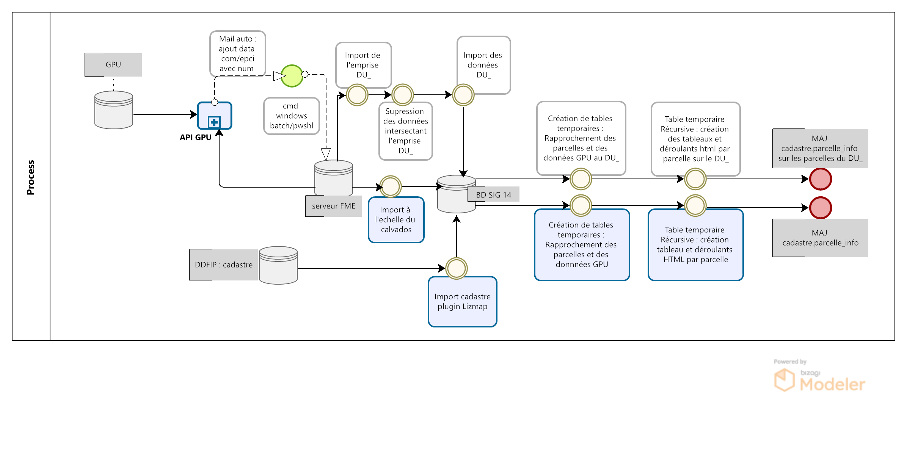{kind=link}
Cela permet aux partenaires du CD14 de pouvoir consulter rapidement les informations du GPU liées à chaque parcelle : impact des zonages sur la parcelle, documents pdf associés, etc.

1- Import FME des données GPU
L’import des données de l’API GPU se fait via le logiciel ETL FME.
Dans un premier temps les données GPU sont chargées dans la base de données du CD14 à l’échelle du Calvados.
Les données du GPU sont segmentées par collectivité via un code partition formé :
du prefixe “DU _”
du code insee commune ou siren epci (en fonction du type de document : carte communale, PLU, PLUI)
D’un code optionnel de secteur pour les EPCI (A, B, C, D)
Pour le Calvados, les codes insee des communes correspondent aux codes insee des communes historiques (avant loi NOTRE).
Pour finir, certaines communes sont soumises au RNU (Réglement National d’Urbanisme) et n’ont donc pas de documents d’urbanisme enregistrés sur le GPU.
1.1 - Zonages et cartes communales
Un premier projet FME récupère les données d’emprise de document ainsi que les zonages PLU et secteurs de cartes communales.
Le workbench FME chargeant les données depuis l’API, réalisant le traitement et l’intégration des données en base se trouve par ici
Récupération des codes siren EPCI et ajout des potentiels suffixes (code optionnel secteur)

Récupération des codes insee des communes historiques
{kind=link}
Interrogation de l’API pour connaître les communes au RNU ou non
On interroge l’API avec les paramètres suivant :
URL : http://apicarto.ign.fr/api/gpu/municipality?insee=@Value(insee)
HTTP method : GET
response body : Attribute

Filtrer les communes qui ne sont pas au RNU et stocker les valeurs (rnu = true/flase) dans une table à part (pour information)
{kind=link}
Récupération des données depuis l’API avec les “DU _” précédemments créés : données emprise, zonage et secteur carte communale
On interroge l’API avec les paramètres suivant :
emprise :
URL : “https://apicarto.ign.fr/api/gpu/document?partition=DU_@Value(siren)”
HTTP method : GET
response body : Attribute
zonage :
Interrogation de l’API avec les DU_partition précédemment créés
URL : “https://apicarto.ign.fr/api/gpu/zone-urba?partition=DU_@Value(siren)”
HTTP method : GET
response body : Attribute
secteur carte communale :
URL : “https://apicarto.ign.fr/api/gpu/secteur-cc?partition=DU_@Value(siren)”
HTTP method : GET
response body : Attribute
{kind=link}
Filtrer les données à partir de la réponse JSON : Expression régulière conservant le chiffre après ‘totalFeatures’ et conservation des lignes dont la valeur est différente de 0.
{kind=link}
Extraction des données du JSON : exposer les attributs et la géométrie

Retraitement des données : supression des prefixes de champs et reprojection de la géométrie (de 4326 à 2154)

1.2 - Prescriptions
Un second projet FME récupère les données de prescriptions linéaires, surfaciques et ponctuels sur le même modèle que précédemment :
Le workbench FME se trouve ICI
Récupération des codes insee des communes historiques qui ne sont pas classées au rnu depuis la table créée dans la partie précédente

Récupération des données depuis l’API avec les “DU _” précédemment créés : données linéaires, surfaces et ponctuels
On interroge l’API avec les paramètres suivant :
surface :
URL : “https://apicarto.ign.fr/api/gpu/info-surf?partition=DU_@Value(siren)”
HTPP method : GET
response body : Attribute
linéaire :
URL : “https://apicarto.ign.fr/api/gpu/info-lin?partition=DU_@Value(siren)”
HTTP method : GET
response body : Attribute
ponctuel :
URL : “https://apicarto.ign.fr/api/gpu/info-pct?partition=DU_@Value(siren)”
HTTP method : GET
response body : Attribute
1.3- Infos prescriptions
Un dernier projet FME récupère les données informations prescriptions linéaires, surfaciques et ponctuels sur le même modèle que précédemment.
Le workbench FME se trouve à cet endroit
Récupération des données depuis l’API avec les “DU _” précédemments créés : données linéaires, surfaces et ponctuels
On interroge l’API avec les paramètres suivant :
surfaces :
URL : “https://apicarto.ign.fr/api/gpu/info-surf?partition=DU_@Value(siren)”
HTTP method : GET
response body : Attribute
linéaires :
URL : “https://apicarto.ign.fr/api/gpu/info-lin?partition=DU_@Value(siren)”
HTTP method : GET
response body : Attribute
ponctuels :
URL : “https://apicarto.ign.fr/api/gpu/info-pct?partition=DU_@Value(siren)”
HTTP method : GET
response body : Attribute
2- Champ HTML GPU par parcelle du cadastre
L’objectif est ici de pouvoir consulter les données du GPU à l’échelle de la parcelle.
L’utilisateur peut en cliquant sur une parcelle, consulter les données du GPU qui intersectent la parcelle, ouvrir les documents pdf associés sur le portail du GPU et connaître l’impact des réglements sur la parcelle.
Pour cela on utilise une fonction postgresql/gis pour alimenter la table parcelle_info du cadastre et une mise en forme du formulaire QGIS en HTML pour publication sur le portail cartographique Lizmap.
2.1 - Fonction postgresql/gis
En premier lieu, on corrige les géométries invalides des données GPU intégrées à la base de données CD14
update ref_urbanisme.gpu_api_zonages set geom = ST_MakeValid(geom); update ref_urbanisme.gpu_api_secteur_cc set geom = ST_MakeValid(geom); update ref_urbanisme.gpu_api_prescription_surf set geom = ST_MakeValid(geom); update ref_urbanisme.gpu_api_prescription_lin set geom = ST_MakeValid(geom); update ref_urbanisme.gpu_api_info_prescription_surf set geom = ST_MakeValid(geom); update ref_urbanisme.gpu_api_info_prescription_lin set geom = ST_MakeValid(geom);
On crée le champ contenant l’html de table contenant les informations GPU par parcelle
ALTER TABLE cadastre.parcelle_info ADD tab_doc_urba varchar;
On crée ensuite les champs contenant l’html des déroulants détaillant les informations contenues dans le tableau
ALTER TABLE cadastre.parcelle_info ADD deroulant_zonage varchar; ALTER TABLE cadastre.parcelle_info ADD deroulant_secteur varchar; ALTER TABLE cadastre.parcelle_info ADD deroulant_prescription varchar; ALTER TABLE cadastre.parcelle_info ADD deroulant_info varchar;
On lance ensuite une fonction postgresql/gis dont le code SQL se trouve ici
Dans un premier temps, la fonction met en place des tables temporaires rapprochant les parcelles du cadastre avec les données du GPU. L’objectif est également de pouvoir indexer ces tables temporaires pour accélerer la suite des traitements.
exemple de rapprochement des zonages PLU
CREATE UNLOGGED TABLE temp_parcelle_zonage_ref_urbanisme as select p.geo_parcelle, z.* FROM cadastre.parcelle_info p inner join ref_urbanisme.gpu_api_zonages z on st_intersects(p.geom, z.geom) and p.geom&&z.geom; -- Indexation de la table temporaire CREATE INDEX index_temp_parcelle_zonage_ref_urbanisme ON temp_parcelle_zonage_ref_urbanisme USING btree (geo_parcelle); CREATE INDEX index2_temp_parcelle_zonage_ref_urbanisme ON temp_parcelle_zonage_ref_urbanisme USING btree (id); CREATE INDEX index_geom_temp_parcelle_zonage_ref_urbanisme ON temp_parcelle_zonage_ref_urbanisme USING gist (geom);
Dans un second temps, on réalise l’union des tables temporaires, on calcule l’impact des zonages GPU par parcelle (par intersection) ainsi que la surface totale de chaque zonage.
exemple d’UNION des zonages PLU et secteurs cartes communales
with parcelle_ref_urbanisme as ( --- selection des infos parcelles et zonages + impact zonage sur parcelle (intersection) + surface zonage total en metres carré (select p.geo_parcelle,z.partition, z.nomfic,z.datappro::date, z.destdomi, z.datvalid::date, concat(round(st_area(z.geom)::numeric, 2)::text, ' m²') as surface, 'Zonages' as type_doc, z.libelle as nom, st_area(ST_CollectionExtract(st_intersection(p.geom, z.geom),3)) as impact, 'surf' as impact_txt, z.libelong as commentaire, st_area(p.geom) as area_parcelle FROM cadastre.parcelle_info p join temp_parcelle_zonage_ref_urbanisme z on z.geo_parcelle = p.geo_parcelle ) UNION --- selection des infos parcelles et secteurs cartes communales + impact secteur sur parcelle (intersection) + surface secteure total en metres carré (select p.geo_parcelle,z.partition, z.nomfic,z.datappro::date, z.destdomi, z.datvalid::date, concat(round(st_area(z.geom)::numeric, 2)::text, ' m²') as surface, 'Secteurs' as type_doc, z.libelle as nom, st_area(ST_CollectionExtract(st_intersection(p.geom, z.geom),3)) as impact, 'surf' as impact_txt, z.libelong as commentaire, st_area(p.geom) as area_parcelle FROM cadastre.parcelle_info p join temp_parcelle_secteurs_ref_urbanisme z on z.geo_parcelle = p.geo_parcelle )
On ne conserve que les entités dont l’impact sur la parcelle est supérieur à 1 ou qui sont des ponctuels et on construit les liens html pour consultation des documents pdf sur le GPU (concatenation de blocs html + num partition + clé dossier pdf emprise + nom de fichier)
select geo_parcelle as parcelle, type_doc, destdomi, nom, datappro, datvalid, surface, impact, case when impact_txt = 'surf' then concat(round(impact::numeric, 2)::text, ' m²') when impact_txt = 'lin' then concat(impact::text, 'm') else impact_txt end -- creation de l'impact en text avec suffixe m² si surf, m si lineaire, sinon pas de suffixe as impact_text , case when parcelle_ref_urbanisme.nomfic is not null then concat('<a href="', 'https://wxs-gpu.mongeoportail.ign.fr/externe/documents/',parcelle_ref_urbanisme.partition,'/', b.id,'/', parcelle_ref_urbanisme.nomfic, '" target="_blank">Règlement</a>') else 'no data' end as reglement, commentaire, round(impact*100/area_parcelle) as taux_inclusion -- création taux d'inclusion : pourcentage de l'impact sur la surface de la parcelle from parcelle_ref_urbanisme left join ref_urbanisme.gpu_api_emprise b on parcelle_ref_urbanisme.partition = b.partition -- jointure de l'emprise pour selection de la clé dossier pdf where (parcelle_ref_urbanisme.impact >= 1 or parcelle_ref_urbanisme.impact_txt ='ponctuel') order by geo_parcelle, type_doc DESC, nom ASC
On construit ensuite les déroulants de détail en html(en accordéon) : concatenation de blocs html et des champs d’informations. On concatène seulement les valeurs non nulles.
exemple de création de déroulant accordéon zonage PLU
select a.parcelle, -- création d'un déroulant "accordion html" zonage pour détail du zonage par parcelle string_agg( ('<br><details class="accordion_urba"><summary> Zone '||coalesce(a.nom, null, '')||'</summary><b>DestDomi</b> '||coalesce(a.destdomi,null, '')||'<br><b>Description</b> '||coalesce(a.commentaire,null, '')||' <br><b>Approbation</b> '||coalesce(a.datappro::text,null, '')||' <br><b>Validité</b> '||coalesce(a.datvalid::text,null, '')||' <br><b>Surface </b> '||coalesce(a.surface::text,null, '')||' </details>'), '' order by a.type_doc DESC, a.nom ASC) as deroulant_zonage -- ordonne par type de document descendant et par nom de document acsendant from pre_fiche a where a.type_doc = 'Zonages' group by a.parcelle
création du tableau HTML principal détaillant le zonage ou carte communale, les prescriptions et les infos prescriptions et ajout des déroulants de détails précédemment créés
select a.geo_parcelle::varchar as parcelle, concat(-- creation du tableau HTML principal détaillant le zonage ou carte communale, les prescriptions et les infos prescriptions '<table class = "t1" > <tr> <th> Types </th> <th> Nom </th> <th> Règlement </th> <th> Impact </th> <th> Commentaire </th> <th> Taux d''inclusion </th> </tr> <tr>', string_agg( -- concatenation bloc html + aggregation des champs d'informations ('<td> ' ||coalesce(b.type_doc,null, '')|| ' </td><td> ' ||coalesce(b.nom,null, '')|| ' </td><td> ' ||coalesce(b.reglement,null, '')|| ' </td><td> ' ||coalesce(impact_text,null, '')|| ' </td><td> '||coalesce(b.commentaire,null, '')||' </td><td> ' ||coalesce(b.taux_inclusion::text,null, '')|| ' </td>' ),'</tr> <tr>'order by b.type_doc DESC, b.nom ASC), -- ordonne par type de document descendant et par nom de document acsendant '</tr> </table>')::varchar as tab_doc_urba, deroulant_zonages.deroulant_zonage::varchar ,deroulant_secteurs.deroulant_secteur::varchar, -- ajout des champs html déroulants deroulant_prescriptions.deroulant_prescription::varchar, deroulant_infos.deroulant_info::varchar, a.geom from cadastre.parcelle_info a left join pre_fiche b on b.parcelle = a.geo_parcelle left join deroulant_zonages on deroulant_zonages.parcelle = a.geo_parcelle left join deroulant_secteurs on deroulant_secteurs.parcelle = a.geo_parcelle left join deroulant_prescriptions on deroulant_prescriptions.parcelle = a.geo_parcelle left join deroulant_infos on deroulant_infos.parcelle = a.geo_parcelle group by a.geo_parcelle, a.geom, deroulant_zonages.deroulant_zonage,deroulant_secteurs.deroulant_secteur, deroulant_prescriptions.deroulant_prescription, deroulant_infos.deroulant_info;
création d’un index sur la table temporaire et update des champs html de la table parcelle info
exemple de mise à jour du champs tableau html
update cadastre.parcelle_info set tab_doc_urba = z.tab_doc_urba from temp_fiche z where z.parcelle = parcelle_info.geo_parcelle;
2.2 - Paramètrage Qgis/plugin Lizmap
Mise à jour de l’info bulle HTML dans les propriétés de la couche QGIS

Le code HTML (Onglet Urbanisme + parties tab_doc_urba + deroulant : secteurs, zonages, prescriptions, info) se trouve ici
2.3 - Rendu lizmap
Mise à jour du CSS dans le panneau de configuration Lizmap
Le code CSS se trouve en suivant ce lien
{kind=link}
3- Mise à jour quotidienne des données
A chaque modification d’un document ou ajout par une collectivité sur le GPU, le pôle SIG du Département met à jour les données issues du GPU dans la base de données CD14 et met également à jour les fiches HTML de la table parcelle_info du cadastre.
3.1 - Mailing auto
Le Géoportail de l’Urbanisme met à disposition un flux ATOM permettant de connaître les dernières mises à jour de documents sur le GPU.
La documentation suivante décrit comment exploiter ce flux : https://www.geoportail-urbanisme.gouv.fr/image/UtilisationATOM_GPU_1-0.pdf
Le pôle SIG utilise un site dédié qui exploite ce flux afin d’envoyer un mail à l’équipe SIG à chaque ajout d’une commmune du Département du calvados.
A la réception de ce mail, un membre de l’équipe déclenche un fichier batch, permettant d’indiquer le numéro de partition et lançant 3 workbench FME de suppression, d’intégration des données GPU dans la BD CD14 et de mise à jour des champs HTML des parcelles du cadastre.
set /p siren= " Saisir l'INSEE de la commune ou le Siren de l'EPCI entre guillemets " D:/apps/FME2022/fme.exe "D:/_FME/DOC_URBA/api_gpu2postgis/Commune_epci/1_DROP_DATA.fmw" --siren %siren% D:/apps/FME2022/fme.exe "D:/_FME/DOC_URBA/api_gpu2postgis/Commune_epci/2_INSERT_DATA.fmw" --siren %siren% D:/apps/FME2022/fme.exe "D:/_FME/DOC_URBA/api_gpu2postgis/Commune_epci/3_FICHE_DOC_URBA_CADASTRE.fmw" --siren %siren% pause
3.2 - FME : Import de l’emprise et supression des données
Le premier worbench FME supprime les données GPU de la base sur le périmètre des nouvelles données importées.
Le workbench FME se télécharge ici
Récupération du code siren EPCI ou insee commune entré dans le batch et ajout des potentiels suffixes (code optionnel secteur)
{kind=link}
Interrogation de l’API avec code partition pour récupérer l’emprise

Paramètres interrogation API :
Interrogation de l’API avec les DU_partition précédemment créés
URL : https://apicarto.ign.fr/api/gpu/document?partition=DU_@Value(siren)
HTTP method : GET
response body : Attribute
Interrogation de l’API avec code partition pour récupérer l’emprise
Filtrer les données à partir de la réponse JSON : Expression régulière conservant le chiffre après ‘totalFeatures’ et conservation des lignes dont la valeur est différente de 0.
Extraction des données du JSON : exposer les attributs et la géométrie
Retraitement des données : supression des prefixes de champs et reprojection de la géométrie (de 4326 à 2154)
Insertion des données dans la table historique_import_donnees et lancement d’une requête SQL supprimant les données GPU dont le “DU _” est égal au “DU _” de leur emprise intersectant le buffer de - 500 mètres de la nouvelle emprise insérée.

Exemple SQL de supression de zonages PLU
delete from ref_urbanisme.gpu_api_zonages g where g.partition = ( select b.partition from ref_urbanisme.historique_imports_du a left join ref_urbanisme.gpu_api_emprise b on st_intersects(b.geom, st_buffer(a.geom, -500)) where a.date_import = now()::date and a.partition like 'DU_$(siren)%' group by b.partition);
3.3 - FME : Import des données en fonction de l’emprise
Le second worbench FME insère les nouvelles données GPU au niveau du code partition “DU _” entré dans le batch sur le modèle décrit dans la partie 1.
Le workbench FME se trouve ici
3.4 - FME/PostgreSQL,GIS : Mise à jour des champs html GPU du cadastre
Le dernier worbench FME lance une fonction mettant à jour les champs HTML du cadastre au niveau du nouveau “DU _ partition” renseigné dans le batch.
Le workbench FME se télécharge ici
Ce workbench fonctionne comme le premier workbench récupérant l’emprise, mais avec une dernière requête qui corrige les géométries invalides des documents GPU et qui lance une fonction postgresql de mise à jour des champs HTML de la table parcelle_info du cadastre.
update ref_urbanisme.gpu_api_zonages set geom = ST_MakeValid(geom) where gpu_api_zonages.partition = @Value(partition); update ref_urbanisme.gpu_api_secteur_cc set geom = ST_MakeValid(geom) where gpu_api_secteur_cc.partition = @Value(partition); update ref_urbanisme.gpu_api_prescription_surf set geom = ST_MakeValid(geom) where gpu_api_prescription_surf.partition = @Value(partition); update ref_urbanisme.gpu_api_prescription_lin set geom = ST_MakeValid(geom) where gpu_api_prescription_lin.partition = @Value(partition); update ref_urbanisme.gpu_api_info_prescription_surf set geom = ST_MakeValid(geom) where gpu_api_info_prescription_surf.partition = @Value(partition); update ref_urbanisme.gpu_api_info_prescription_lin set geom = ST_MakeValid(geom) where gpu_api_info_prescription_lin.partition = @Value(partition);
Une requête à part permet de mettre à jour le html :
select ref_urbanisme.fiches_parcelles_lizmap(@Value(partition));
III- Ajouter un onglet “Filiation parcellaire” à la pop-up cadastre de Lizmap

Les fichiers départementaux des documents de filiation informatisés (DFI) des parcelles permettent de consulter l’historique des parcelles cadastrales.
Ce fichier recense les modifications parcellaires réalisées depuis l’informatisation de leur procédure de mise à jour qui, selon les départements, est intervenue entre les années 1980 à 1990. L’origine des différentes mises à jour (documents d’arpentage, croquis de conservation, remaniement…) ainsi que leurs dates sont renseignées.
Ce fichier sont disponibles sur le site datagouv.fr
Le fichier est au format txt. Le point-virgule est le caractère séparateur. La taille des champs est fixe.
Chaque lot d’analyse d’un même document de filiation fait l’objet de deux lignes successives :
celle de type 1 pour toutes ses parcelles mères (il peut n’y en avoir aucune dans le cas d’extraction du domaine non cadastré) ;
celle de type 2 pour toutes ses parcelles filles (il peut n’y en avoir aucune dans le cas de passage au domaine public).

A partir de ce fichier, le pôle SIG du Département du Calvados, propose de consulter la généalogie d’une parcelle.
1- Traitement et import FME des données
Le fichier DFI est difficilement exploitable en brut.
Le fichier sépare chaque valeur par un ; .
Le nombre de valeurs de parcelles est variable, ce qui implique un nombre de champ variable.
Le workbench FME se trouve ici
1.1 Regexp : correction du fichier
Dans un premier temps, afin de pouvoir correcetement lire le fichier, les données parcelles sont réunies en listes dans un seul champ à l’aide d’expression régulière et de l’ETL FME.
140;001;000;0000299;1;19900305;XXXXXREDACTEURDUDOCUMENTXXXX;00001;2;A0297;A0298;
Identifier les listes de parcelles après le 9e ;
(?:[^;]*;){9}(.*)
match1 : 140;001;000;0000299;1;19900305;XXXXXREDACTEURDUDOCUMENTXXXX;00001;2;A0297;A0298;
group1 : A0297;A0298;
Extraire le résultat du group1 dans un attribute creator
@Value(list_parcelles{0}.part)
Supprimer les valeurs du group du premier match
match1 : 140;001;000;0000299;1;19900305;XXXXXREDACTEURDUDOCUMENTXXXX;00001;2
Remplacer les ; du resultat de liste de parcelles extrait par des ,
group1 : A0297,A0298,
Concatener le match 1 et les résultas extraits
140;001;000;0000299;1;19900305;XXXXXREDACTEURDUDOCUMENTXXXX;00001;2;A0297, A0298,
On ajoute ensuite une ligne avec la liste des nom de champ
{kind=link}
1.2 Lecture du CSV
Après écriture du fichier, on lit le fichier CSV en exposant la liste des attributs souhaités.

1.3 Remplacer : seconde correction du fichier
On effectue une dernière correction du fichier avant intégration dans la base de données.

Ajout des préfixes 0 aux sections et codecom en fonction de la longueur des variables (un 0 si length() = 2, deux 0 si length() =1 .
supprimmer les espaces dans le champ list parcelle
supprimmer la dernière virgule en trop dans le champ list parcelle
2- Champ HTML historique déroulant
L’objectif est ici de pouvoir consulter l’historique des filiations à l’échelle de la parcelle.
L’utilisateur peut, en cliquant sur une parcelle, consulter la généalogie de sa parcelle, connaitre sa/ses parcelles méres (antérieur), ses parcelles soeurs (issues de la/des même(s) parcelle(s) mère(s)) et connaître la nature de la filiation.
Pour cela on utilise une fonction postgresql/gis pour alimenter la table parcelle_info du cadastre et une mise en forme du formulaire QGIS en HTML pour publication sur le portail cartographique Lizmap.
2.1 - Fonction postgresql/gis
On crée le champ contenant l’html des déroulants détaillant les filiations du plus récent au plus ancien
alter table cadastre.parcelle_info add column tab_filiation text;
On lance ensuite une fonction postgresql/gis dont le code SQL se trouve ICI
Dans un premier temps, la fonction met en place une table temporaire (que l’on va indexer) regroupant ligne par ligne les infos dfi, la nature détaillée des dfi, la liste des parcelles mères et la liste des parcelles filles associées (filiation)
create UNLOGGED TABLE temp_parcelles_dfi as SELECT a.code_com AS code_com, a.pref_section AS pref_section, a.id_dfi, a.num_analyse, a.date_valid, case when a.nature_dfi = '1' then 'arpentage' when a.nature_dfi = '2' then 'croquis de conservation' when a.nature_dfi = '4' then 'remaniement' when a.nature_dfi = '5' then 'arpentage numerique' when a.nature_dfi = '6' then 'lotissement numérique' when a.nature_dfi = '7' then 'lotissement' when a.nature_dfi = '8' then 'rénovation'end as nature_dfi,-- détail de la nature en fonction du code_nature a.list_parcelle AS parcelles_meres, -- liste des parcelles mères quand type_ligne = 1 b.list_parcelle AS parcelles_filles --liste des parcelles filles associées aux parcelles mères quand type_ligne = 2 (jointure sur date, code com, section, id_dfi et numero d'analyse) FROM ref_foncier.parcelles_dfi a, ref_foncier.parcelles_dfi b WHERE a.type_ligne = '1'::text AND b.type_ligne = '2'::text AND concat(a.date_valid, a.code_com, a.pref_section, a.id_dfi, a.num_analyse) = concat(b.date_valid, b.code_com, b.pref_section, b.id_dfi, b.num_analyse);
Création d’une table temporaire listant les premières filiations liées aux parcelles actuelles du cadastre
create UNLOGGED TABLE temp_parcelles_init as with parcelle_init as ( -- liste des parcelles du cadastre qui sont comprises dans les parcelles filles dfi select a.code_com, a.date_valid, a.nature_dfi, a.pref_section, a.id_dfi, a.num_analyse, a.parcelles_meres, -- Conservation des parcelles mères dfi dont les filles comprennent une parcelle du cadastre concat('{', b.ccosec, b.dnupla, '}')::text[] as parcelles_filles, -- Parcelle du cadastre associée aux parcelles filles dfi replace(a.parcelles_filles::text,concat( b.ccosec, b.dnupla), '') as parcelles_soeurs -- Supprimer (remplacer par '') la parcelle du cadastre associée de la liste des parcelles filles pour trouver les parcelles soeurs from temp_parcelles_dfi a, cadastre.parcelle b where concat(b.ccosec, b.dnupla) = ANY(a.parcelles_filles::text[]) -- jointure sur les num parcelle et section cadastre dans les parcelles filles dfi and a.code_com::text = b.ccocom -- et sur une même commune and a.pref_section::text = translate(b.ccopre, ' ', '0') ) -- et sur un même prefixe de séction select a.code_com, a.date_valid, a.nature_dfi, a.pref_section, a.parcelles_meres::text[], a.parcelles_filles::text[] , replace(translate(parcelles_soeurs::text, '{}', ''), ',', ' ') as parcelles_soeurs, -- transformation en format liste des listes de parcelles 1 as num_filiation, -- création d'un numéro de filiation concat(translate(a.parcelles_filles::text, '{}','') ) as id_filiation ---conserver le numéro de parcelle fille initial en format txt from parcelle_init a ;
Création d’une table temporaire rapprochant les parcelles filles aux listes de parcelles mères (récursive)
CREATE UNLOGGED TABLE temp_parcelle_filiation as with recursive search_meres (code_com, date_valid, nature_dfi, pref_section, parcelles_meres , parcelles_filles, parcelles_soeurs, num_filiation, id_filiation) as (-- paramètres récursive select a.* --selection des filiations initiales au cadastre from temp_parcelles_init a UNION -- union pour la recursivité select c.code_com,c.date_valid, c.nature_dfi, c.pref_section, c.parcelles_meres::text[], -- Conservation des parcelles mères dfi dont les filles comprennent d'autres parcelles filles dfi array(select unnest(c.parcelles_filles::text[]) intersect select unnest( d.parcelles_meres::text[])) as parcelles_filles ,---- selectionner les parcelles filles dfi comprises dans les listes de parcelles mères initiales array(select unnest(c.parcelles_filles::text[]) except select unnest( d.parcelles_meres::text[]))::text as parcelles_soeurs, ---- selectionner les parcelles filles dfi non comprises dans les listes de parcelles mères initiales pour trouver les parcelles soeurs d.num_filiation + 1 as num_filiation, -- ajout de 1 au numéro de filiation d.id_filiation --- conserver le numéro de parcelle cadastre initial en txt from temp_parcelles_dfi c, search_meres d where d.parcelles_meres::text[] && c.parcelles_filles::text[] -- jointure des parcelles dfi aux parcelles initiales quand au moins une parcelle de la liste parcelle mère initiale est comprise dans la liste parcelle fille dfi AND concat(d.code_com, d.pref_section) = concat(c.code_com, c.pref_section)), -- et sur le code commune et prefixe de section result as (select row_number() over() as fid, a.* from search_meres a ) --- selectionner le resultat de la recursive et ajouter un id unique
… Suite de la table : création du bloc déroulant HTML avec historique des filiations de parcelles dans un champ text avec num parcelle associé
select row_number() over() as id, --- creation du html concat(-- bloc html creant la table deroulante '<table class = "t2"> <thead> <tr> <th>date de filiation </th> <th>nature de la filiation</th> </tr> </thead> <tbody>', string_agg(-- aggregation des infos dfi filles, meres et soeurs : date, parcelles ordonnées par le numéro de filiation ('<tr> <td><label for="row'||fid || '"></label>' || date_valid::text::date || '</td> <td>'|| nature_dfi || '</td> </tr><tr> <td colspan="6"> <input id="row'||fid||'" type="checkbox"> <table> <tr> <th>Nouvelle(s) parcelle(s)</th> <th>Parcelle(s) soeur(s)</th> <td>Ancienne(s) parcelle(s)</td> </tr> <tr> <th>'||translate(parcelles_filles::text, '{}', '')||'</th> <th>'||translate(parcelles_soeurs::text, '{}', '')||'</th> <td>'||translate(parcelles_meres::text, '{}', '')||'</td> </tr> </table>' ) , '</td> </tr>' order by num_filiation asc),'</tbody> </table>') as tab_filiation, concat('140',code_com, pref_section, id_filiation) as num_parcelle -- creation du num parcelle : cod dep + codcom + pref_section + num_parcelle cadastre initial from result a group by code_com, pref_section, id_filiation; -- grouper par parcelle, pref section et num parcelle cadastre initial
Mise à jour des champs HTML de la table parcelle_info grâce aux identifiants parcelles de la table précédement créée.
IV- Ajouter un onglet “Mutations immobilières” à la pop-up cadastre de Lizmap
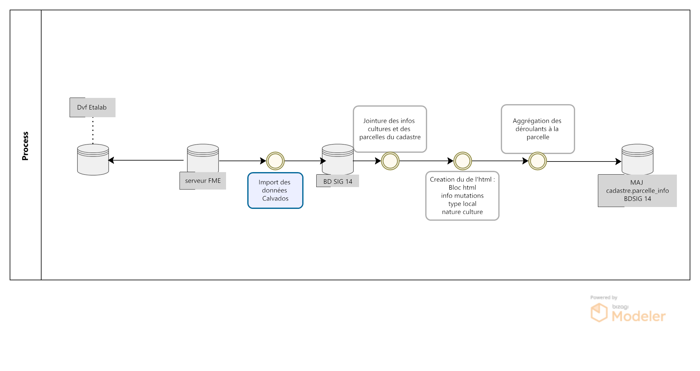{kind=link}
Le jeu de données « Demandes de valeurs foncières », publié et produit par la direction générale des finances publiques, permet de connaître les transactions immobilières intervenues au cours des cinq dernières années. Les données contenues sont issues des actes notariés et des informations cadastrales.
Il est disponible sur le site datagouv.fr
Les fichiers correspondant chacun à un millésime sont mis à disposition au format.txt. sur cinq ans.
Les fichiers mis à disposition font l’objet d’une mise à jour semestrielle, en avril et en octobre.
A partir de ce fichier, le pôle SIG du Département du Calvados, propose de consulter l’historique des mutations immobilières et leurs valeures foncières à l’échelle d’une parcelle.

1- Champ HTML historique déroulant
L’objectif est ici de pouvoir consulter l’historique des mutations immobilières et les valeurs foncières à l’échelle de la parcelle.
L’utilisateur peut en cliquant sur une parcelle, consulter les différentes mutations immobilières opérées sur la parcelle ces 5 dernières années.
Pour cela on utilise une fonction postgresql/gis pour alimenter la table parcelle_info du cadastre et une mise en forme du formulaire QGIS en HTML pour publication sur le portail cartographique Lizmap.
1.1 - Fonction postgresql/gis
On créé le champ contenant l’html des déroulants détaillant les filiations du plus récent au plus ancien
ALTER TABLE cadastre.parcelle_info ADD column deroulant_dvf varchar;
On lance ensuite une fonction postgresql/gis dont le code SQL se trouve à cet endroit
Dans un premier temps, on sélectionne des valeurs de champs distincts pour éviter les doublons
select distinct on ( a.code_ch, a.ref_doct, a.no_disposition,...
On joint les natures de cultures et cultures spéciales (créer une table à partir de la notice descriptive disponible sur le site datagouv.fr ), ainsi que les numéros de parcelles du cadastre.
row_number() over() as id, -- creation d'un id unique b.geo_parcelle, b.geom, date_mutation, nature_mutation, valeur_fonciere , concat(no_voie, ' ', type_de_voie,' ', a.voie,' ', code_postal) as adresse , type_local, nb_piece_princ, surf_reelle_bati, surf_terrain, c.libelle as nature_culture, -- ajout de la nature culture d.libelle as nature_culture_speciale -- ajout de la nature culture spéciale from cadastre.parcelle_info b --- jointure de la tbale parcelle_info inner join ref_foncier.valeurs_foncieres a on b.geo_parcelle = concat(concat(code_dep, '0'), case when length(code_com) = 1 then concat('00', code_com) when length(code_com) = 2 then concat('0', code_com) else code_com end , pref_section, case when length(section) = 1 then concat('0', section) else section end, no_plan) left join ref_foncier.valeurs_foncieres_cultures c on a.nature_culture = c.code left join ref_foncier.valeurs_foncieres_cultures_speciales d on a.nature_culture_speciale = d.code) pars as (select a.geo_parcelle, a.date_mutation, valeur_fonciere, nature_mutation, adresse,surf_terrain, a.type_local,a.nb_piece_princ, a.surf_reelle_bati, a.nature_culture, a.nature_culture_speciale from parcelles_dvf a group by a.geo_parcelle, a.date_mutation, valeur_fonciere, nature_mutation, adresse,surf_terrain, a.type_local,a.nb_piece_princ, a.surf_reelle_bati, a.nature_culture, a.nature_culture_speciale, a.surf_terrain ),
Création du champ html : bloc html + info mutation, décomposition type local + nature culture
group_parcelle as (--- creation du champ html : bloc html + info mutation, decomposition type local + nature culture select a.geo_parcelle, a.date_mutation, concat('<br><details class="accordion_valeur_fonc"><summary>', nature_mutation,' / ', coalesce(valeur_fonciere,null, 'xx'),' euros <br>', date_mutation,'<br>',coalesce(a.adresse,null, ''), '</summary>', string_agg( ('<br> '|| case when a.type_local = 'Maison' then '<img class="fit-picture" src="https://raw.githubusercontent.com/sig14/sig14.github.io/main/img/house.png" width="20"' when a.type_local = 'Appartement' then '<img class="fit-picture" src="https://raw.githubusercontent.com/sig14/sig14.github.io/main/img/apartment-xxl.png" width="20"' when a.type_local = 'Local industriel. commercial ou assimilé' then '<img class="fit-picture" src="https://raw.githubusercontent.com/sig14/sig14.github.io/main/img/shop.png" width="20"' when a.type_local = 'Dépendance' then '<img class="fit-picture" src="https://raw.githubusercontent.com/sig14/sig14.github.io/main/img/dependance.png" width="20"' else '' end || '</img> '||-- decompostion du type de local : ajout d'un lien vers image github associé selon le type concat(a.type_local,' <br> ') ||case when (a.nb_piece_princ = '0' or a.nb_piece_princ is null) then '' else concat(a.nb_piece_princ::text, ' pièces<br> ') end || case when (a.surf_reelle_bati = '0' or a.surf_reelle_bati is null) then '' else concat(a.surf_reelle_bati::text, 'm²<br>') end), '' order by date_mutation::date DESC )) as html_general, concat( --- ajout de la nature terrain si present : surface terrain avec image terrain associé , null si pas de valeur de surface nullif(concat( '<br><br><img class="fit-picture" src="https://raw.githubusercontent.com/sig14/sig14.github.io/main/img/grass.png" width="20" </img> Terrain<br>' , surf_terrain, ' m² <br>'), '<br><br><img class="fit-picture" src="https://raw.githubusercontent.com/sig14/sig14.github.io/main/img/grass.png" width="20" </img> Terrain<br> m² <br>'), nullif(translate(array_agg( DISTINCT nature_culture::text )::text, '{}', '' ), 'NULL'),'<br>' --- aggregation des natures de cultures, null si pas de valeur , nullif(replace(translate(array_agg( DISTINCT nature_culture_speciale::text)::text, '{}', ''), 'NULL', ''), '') --- aggregation des natures de cultures spéciales, null si pas de valeur ) as html_terrain from pars a group by a.geo_parcelle, a.date_mutation, valeur_fonciere, nature_mutation, adresse,surf_terrain ), concatenation as (select a.geo_parcelle, a.date_mutation, concat(html_general, string_agg((html_terrain), ''), '</details>' ) as deroulant_dvf from group_parcelle a group by a.geo_parcelle, a.date_mutation, html_general)
Agréger les déroulants par parcelle et les ordonner par date de mutation
select a.geo_parcelle, string_agg((deroulant_dvf), '' order by date_mutation::date DESC) as deroulant_dvf from concatenation a group by a.geo_parcelle;
indexation de la table, vider et updater le champ déroulant html de cadastre.parcelle_info au niveau du numéro de parcelle
CREATE INDEX index_temp_dvf ON temp_dvf USING btree (geo_parcelle); update cadastre.parcelle_info set deroulant_dvf = null; update cadastre.parcelle_info set deroulant_dvf = b.deroulant_dvf from temp_dvf b where b.geo_parcelle = parcelle_info.geo_parcelle;
2.2 - Paramètrage Qgis/plugin Lizmap
Mise à jour de l’info bulle HTML dans les propriétés de la couche QGIS
Le code HTML (onglet mutation immobilière + partie deroulant_dvf) se trouve par ici
1.3 - Rendu lizmap
Mise à jour du CSS dans le panneau de configuration Lizmap
Le code CSS se trouve ici
I- Périmètres des bornes incendies
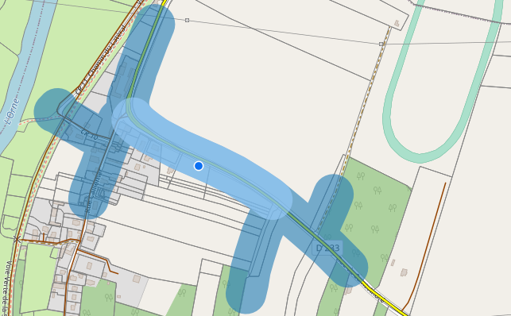{kind=link}
Dans le cadre du partenariat entre le CD14 et les Services Départementaux d’Incendie et de Secours (SDIS), une application a été développée à destination des communes et partenaires afin de répertorier les points d’eau incendie (PEI) du Département.
La mise à disposition de ces sources d’eau relève de la responsabilité du maire.
Ainsi, où que les pompiers interviennent en zone habitée, ils devraient disposer d’un accès à l’eau à moins de 200 mètres et d’une distance maximale de 400 mètres entre les points d’eau incendie.
Ainsi, une réfléxion a été menée pour calculer automatiquement ces 2 périmètres le long des routes à chaque création de borne incendie.
L’approche developpée consiste donc à éxploiter la localisation des PEI, créer des linéaires d’isodistances et les périmètres de 200 et 400 mètres via la route.

1- Référentiels de données
1.1 BD Topo tronçons de routes
Caractéristiques : * Source : IGN * Réseau routier * Format : vecteurs Multilinestring
1.2 Points Eau incendie DECI
Caractéristiques : - Source : SDIS - Poteaux ou bouches d’incendie, raccordés au réseau d’eau potable - Format : vecteur point
2- Création du linéaire routier de référence
La première étape consiste à créer une table miroir de données routes, en y indéxant les points de départ et d’arrivée de chaque tronçon.
Le bornage de ces tronçons permettra par la suite de fixer le parcours de réseau et de mesurer les distances parcourues.
Le code sql de la fonction se trouve ici : Fonction référentiel bornage routes DECI
2.1 Isoler les segments de route
Dumper la géométrie des routes pour obtenir les segments de routes.
create table sdis.route_deci_segments as select row_number() over () as id, a.id as oid, dump.geom from sdis."2d_deci_bdtopo" a, st_dump(geom) as dump ;
2.2 Indexer les startpoints des segments
On boucle sur les géométries de segments pour alimenter un champs n1.
On débute par la valeur 1 et on ajoute 1 à chaque nouvelle géometrie de startpoint dans une liste (indexe).
On garde également en mémoire la géométrie dans une liste (points).
A chaque création d’entité, on vérifie la position du startpoint dans la liste (points). Si aucune position dans la liste on ajoute une valeur n1 (n+n1). Sinon, on donne la valeur de n de la liste (indexe) selon la position du startpoint dans la liste (points) au champs n1.
for rec in select * from sdis.route_deci_segments loop -- Première extrémité pt = st_startpoint(rec.geom); -- On cherche si ce point a déjà un numéro de noeud pos := array_position(points, pt); if pos is NULL then -- le point n'est pas encore indexé -- on crée un numéro et on l'insère update sdis.route_deci_segments set n1 = n where id = rec.id; points = array_append(points, pt); indexe = array_append(indexe, n); n := n + 1; else -- on prend le numéro existant pos := array_position(points, pt); update sdis.route_deci_segments set n1 = indexe[pos] where id = rec.id; end if;

2.3 Indexer les endpoints des segments
On applique la même méthode sur les endpoints
-- Seconde extrémité pt = st_endpoint(rec.geom); pos := array_position(points, pt); -- On cherche si ce point a déjà un numéro de noeud if pos is NULL then -- le point n'est pas encore indexé -- on crée un numéro et on l'insère update sdis.route_deci_segments set n2 = n where id = rec.id; points = array_append(points, pt); indexe = array_append(indexe, n); n := n + 1; else -- on prend le numéro existant pos := array_position(points, pt); update sdis.route_deci_segments set n2 = indexe[pos] where id = rec.id; end if; end loop;
{kind=link}
3- Automatisation de la création des pèrimètres
La seconde étape consiste à la mise en place d’une fonction déclenchée par un trigger, pour calcul automatique des périmètres 200 et 400 mètres à partir de la projection sur le référentiel routier du PEI nouvellement créé.
Le code sql de la fonction se trouve ici : Fonction calcul automatique perimètre PEI
3.1 Restreindre la zone de calcul
Afin d’optimiser le temps de calcul, on sélectionne uniquement les routes à 500 mètres du PEI créé.
CREATE UNLOGGED TABLE IF NOT EXISTS route_deci --- création d'une table temporaire qui sélectionne les segments_deci dans un buffer de 500 mètre autour du nouveau point créé as select r.* from sdis.route_deci_segments r where st_intersects(r.geom, st_buffer(NEW.geom, 500, 'quad_segs=8')) ; CREATE INDEX route_deci_idx ON route_deci (id);---création d'un indexe sur l'id de la table
3.2 Récursive : parcourir le linéaire à 400 mètres
Nous utilserons ici l’expression récursive de postgresql.
On localise d’abords le segment le plus proche à moins de 40 mètres du nouveau PEI créé.
On identifie la fraction du segment au niveau du point projeté (ST_LineLocatePoint)
On calcul la longueur de la fraction du segment (longeur segment X fraction)
select r.*, st_length(r.geom) * ST_LineLocatePoint(r.geom, st_closestpoint(r.geom, NEW.geom)) as longueur_depart, ---fraction de la longeur du segment de départ au niveau du point projeté sur le segment le plus proche ST_LineLocatePoint(r.geom, st_closestpoint(r.geom, NEW.geom)) as fraction --- fraction du segment de départ au niveau du point projeté sur le segment le plus proche from route_deci r where st_intersects(st_buffer(r.geom, 40),NEW.geom) -- segment de départ à 40 mètre du point créé order by st_distance (NEW.geom, r.geom) limit 1-- On garde seulement un segment (le plus proche)

On crée ensuite les géométries correspondantes aux deux fractions du segment
n1_distance as ( -- on récupère pour le premier segement, juste une fraction (car la borne n'est pas située -- pile à une extrémité select longueur_depart as dist_n1, st_linesubstring(p.geom, 0, fraction) as n1_geom -- ici on stocke la fraction de geom à parcourir from premier_troncon p ), n2_distance as ( -- idem pour le deuxième noeud select st_length(geom) - longueur_depart as dist_n2, st_linesubstring(p.geom, fraction, 1) as n2_geom -- On calcul la longeur 2e fraction du segement en soustrayant la longeur de la 1ere fraction à la longeur du segment . On stocke également la geom à parcourir from premier_troncon p )

- On prépare ensuite la requête initiale de la récursive. Union des deux fractions de segment :
On récupère l’identifiant du segment
La valeur de n1 pour la première fraction de segment (startpoint)
La valeur de n2 pour la deuxième fraction de segment (endpoint)
On attribue la valeur null pour le n2 du premier segment et le n1 du deuxième segment.
On récupère la longueur des fractions de segment (dist_n1 et dist_n2)
On stocke l’dentifiant dans une liste (array)
On récupère la géométrie des fractions de segment (n1_geom et n2_geom)
n1_distance as ( select id, n1 , null as n2 , dist_n1 as meters, ARRAY[p.id] as path_id, n1_geom as geom_initiale -- on récupérer la valeur du noeud 1, null pour noeud 2 pour ne pas associer des segment du mauvais coté dans la recursive. On stocke également l'id (array) from n1_distance, premier_troncon p union -- pour partir dans les deux direction (noeud 1 et noeud 2) select id, null as n1, n2 , dist_n2 as meters, ARRAY[p.id] as path_id, n2_geom as geom_initiale-- idem que pour la première direction. null au n1 pour ne pas associer des segments de ce coté. from n2_distance, premier_troncon p

- On sélectionne les segments de routes qui ont les mêmes noeuds que les segments de la requête initiale:
On séléctionne les segments de routes DECI dont le n2 ou le n1 correspond au n2 ou n1 de la requête initiale
On récupère leur identifiant
On récupère leur n1
On récupère la geom de la fraction de segment associée
On récupère la liste d’identifiants gardée en mémoire de la fraction de segment associée
ng as ( select r.id, r.n1 as _n1, r.n2 as _n2, sg.meters, -- distance cumulée sg.path_id, r.geom, -- geométrie du segment en cours de parcours sg.geom_initiale -- géométrie de départ (fraction du premie rsegement, en fonction de la projection de la borne dessus) from search_graph sg, route_deci r where ( sg._n2 = r.n1 or sg._n1 = r.n2 -- on cherche tout n1 ou n2 qui correspond à la fin de notre segment courant or sg._n1 = r.n1 or sg._n2 = r.n2))
- On ajoute une UNION entre ces résultats et la requête initiale pour la récursivité:
On sélectionne les id, les nœuds et les géometries de segments de routes rapprochés
On aditionne la longueur de la geometrie rapprochée à la longueur de fraction du segment
On stocke l’id du segment rapproché dans la liste d’identifiants gardée en mémoire
select distinct on (ng.id) ng.id, ng._n1, ng._n2, ng.meters + st_length(ng.geom),-- on ajoute la longeur du nouveau segment associé à la distance cumulée ng.path_id || ng.id, ng.geom_initiale from ng
- On termine la recursive :
On conditionne l’ajout de segments (arrête de la recursive) à une distance cumulée de 360 mètres
On ferme la recursive, on la lance
On récupère au passage les géométrie de segments DECI qui ont le même id que l’ensemble des segments rapprochés.
ng where ng.meters < 360 -- filtre sur la distance max ) select sg.id, sg._n1, sg._n2, sg.meters, r.geom, sg.geom_initiale from search_graph sg join route_deci r on r.id = sg.id
{kind=link}
3.3 Fractionner les segments trop longs
- Pour la suite du traitement, on conserve les résultats dont la longueur cumulée est égale ou inférieure à 360 mètres.
troncons_valides as ( select * from resultat where meters <= 360 ),
On sélectionne ensuite les résultats dont la longueur cumulée est supérieure à 360 mètres, on joint les routes DECI en n1 ou n2.
si le segment joint en n_2 n’est pas un segment initial (pas de noeuds null)
st_linesubstring(t.geom, 0, (st_length(t.geom)-(t.meters - 360)) / st_length(t.geom))
{kind=link}
si le segment joint en n_2 n’est pas un segment initial (pas de noeuds null)
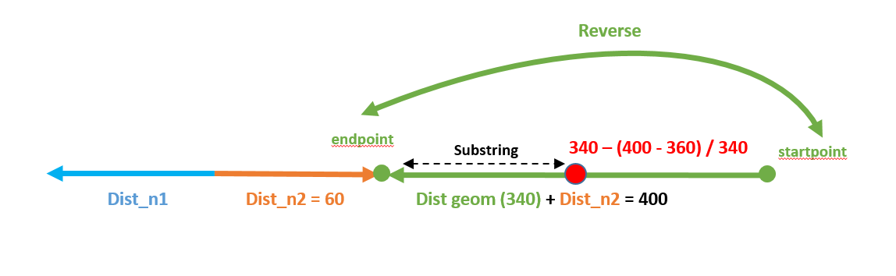st_linesubstring(st_reverse(t.geom), 0, (st_length(t.geom) - (t.meters - 360)) / st_length(t.geom))
{kind=link}
si le segment est le segment initial fraction 1 (noeud 2 est null)
st_linesubstring(st_reverse(t.geom_initiale), 0, (st_length(t.geom_initiale) - (t.meters - 360)) / st_length(t.geom_initiale))
{kind=link}
si le segment est le segment initial fraction 2 (noeud 1 est null)
st_linesubstring(t.geom_initiale, 0, (st_length(t.geom_initiale)-(t.meters - 360)) / st_length(t.geom_initiale))

- Pour finir, on insère dans la table de données à 400 mètres l’UNION des données suivantes :
Buffer de 40 mètres de la géométrie des résultats dont la longueur cumulée est égale ou inférieure à 360 mètres.
Buffer de 40 mètres de la géométrie des fractions de segment dont la longueur est égale ou inférieure à 360 mètres.
Buffer de 40 mètres de la géométrie des fractions de segment dont la longueur était supérieure à 360 mètres.
final as ( select id , st_buffer(geom_initiale, 40) as geom from troncons_valides -- on récupere le buffer 40m de la geom des fraction de segments initiale union select id , st_buffer(geom, 40) as geom from troncons_valides where st_length(geom) <= 360 -- on récupere le buffer 40m de la geom des segments qui font moins de 400 mètres union select id , st_buffer(geom, 40) as geom from fractions -- on récupère le buffer 40m des geom des fractions de segments qui dépassent 400 mètres ) select ST_Multi(st_union(geom)) into geom_buffer_400 -- on unie les geom buffer en MULTI* geometry collection from final;
II- Rapprochement adresse BDtopo IGN
Afin de faciliter le travail d’intervention des secours, le pôle SIg à répondu à une demande de rapprochement des adresses BAL dont dispose le Département avec les tronçons de voies IGN.
L’objectif étant de déterminer pour chaque tronçon de BDtopo : * Le nom de la voie * Le premier numéro à droite * Le premier numéro à gauche * Le dernier numéro à droite * Le dernier numéro à gauche
{kind=link}
1- Rapprochement des voies adresses avec les tronçons routes
Cette première étape vise à associer pour chaque voie tracée et enregistrée par les communes dans la base de données adresse du Département un tronçon BDtopo IGN.
Pour cela nous faisons appel à la fonction adresse.id_voie_bdtopo_sdis() qui se trouve ici : fonction sql
1.1 Segmenter les tronçons Bdtopo
Dans un premier temps, la fonction crée une table temporaire des nœuds de BDtopo que l’on va pouvoir indexer pour accélérer le traitement :
1 - Sélection des périmètres communes bdtopo correspondant aux périmètres des communes adresses publiées (pour circonscrire les tronçons sur les bons périmètres)
with commune_pub as ( select st_buffer(bc.geom, 100) as geom from adresse.v_communes_publiees a, ign.bdtopo_commune bc -- buffer de 100 mètres des communes ign du au décalage ign osm where a.insee_code = bc.insee_com ), troncon_com_pub as (--- selection des tronçon sur les communes bdtopo sléctionnées plus haut select b.* from ign.bdtopo_troncon_de_route b, commune_pub where st_intersects(b.geom,commune_pub.geom) )2 - Création de noeuds bdtopo : segmentation des tronçons tous les 10 mètres, transformation des segments en multipoints, dump pour avoir des géométries uniques.
select ROW_NUMBER() OVER() as id_pt, c.id, (ST_Dump(ST_AsMultiPoint(st_segmentize(ST_Force2D(c.geom) ,10))::geometry(MULTIPOINT,2154))).geom as geom --- création de noeuds multipoints bdtopo à partir de la segmentisation des tronçons(3D) from troncon_com_pub c; CREATE INDEX node_bd_topo_geom --- création d'un indexe sur la geom de la table ON node_bd_topo USING gist (geom) TABLESPACE pg_default;
{kind=link}
1.2 Segmenter les tronçons Bdtopo
Dans un second temps on rapproche les tronçons dont la majorité des noeuds se trouve sur une voie adresse.
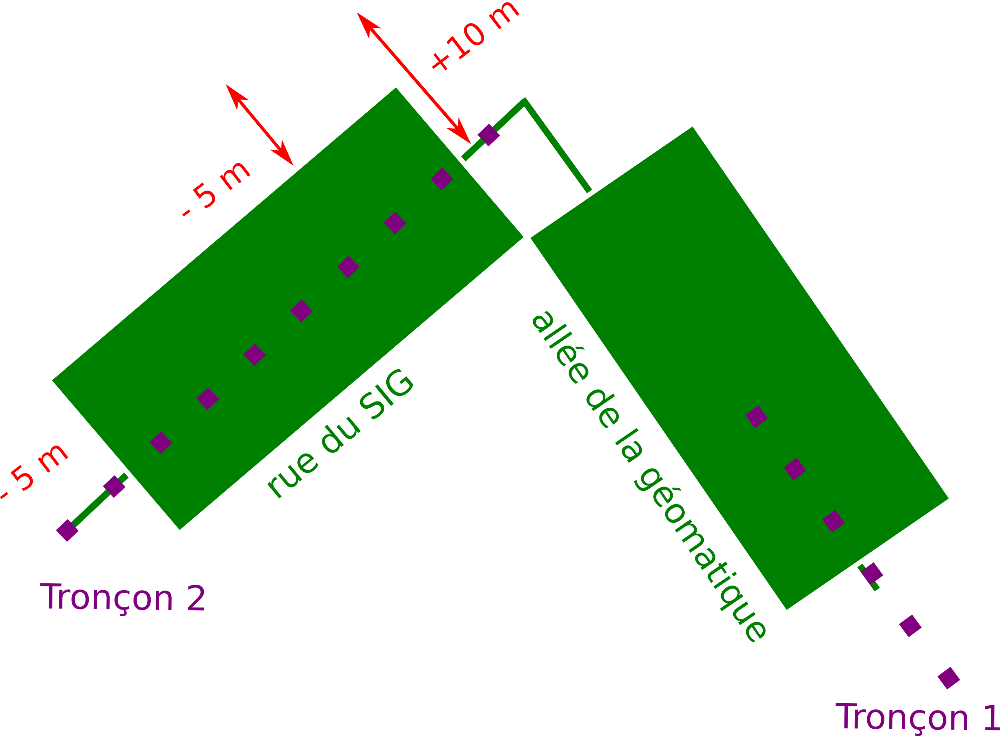1 - Buffer des voies adresses
with commune_pub as ( ------ selection des communes bd_topo correspondant aux communes publiées adresse select st_buffer(bc.geom, 100) as geom from adresse.v_communes_publiees a, ign.bdtopo_commune bc -- buffer de 100 mètres des communes ign du au décalage ign osm where a.insee_code = bc.insee_com ), voie as ( ------ selection des voies adresses bufferisées sur les communes publiées adresse select v.id_voie, ST_Buffer(ST_Buffer(v.geom, 10, 'endcap=flat join=round'), -5, 'endcap=flat join=round') as geom -- on aura besoin du buffer pour collecter les noeuds (on créé un buffer de 10 mètres et on raccourci les bords de 5 mètres) from adresse.voie v, commune_pub a where st_intersects(a.geom,v.geom) ),2 - Compter le nombre de noeuds par tronçon de route
pt_count_troncon as (------ Compte le nombre de noeuds par tronçon select id, count(id_pt) as ct from node_bd_topo group by id),4 - Rapprocher les noeuds bdtopo qui intersectent le buffer des voies adresses
f as (------ rapprochement des id_voies et des noeuds à l'intérieur du buffer des voies précédemment créé select b.id_pt, b.id, voie.id_voie from node_bd_topo b inner join voie ON ST_Within(b.geom, voie.geom) ),5 - Compter le nombre de noeuds bdtopo par voie adresse
l as ( ------ Compte le nombre de noeud pour chaque id_voie select f.id, f.id_voie, count(f.id_voie) as ct from f group by f.id, f.id_voie ),6 - Rapprochement des tronçons à une voie adresse si la majorité de ses nœuds est comprise dans son buffer
troncon_node as ( ------ Séléctionne les id_tronçon dont la majorité des noeuds intersecte le buffer des voies select distinct on (l.id) l.id, l.id_voie, l.ct from l , pt_count_troncon where pt_count_troncon.id = l.id and (pt_count_troncon.ct/l.ct)<= 2 -- division du total des noeuds tronçon/le nombre de noeuds pour un même id_voie, si moins de 2, on conserve l'id-tronçon et l'id_voie associé order by l.id, l.ct DESC) select troncon_node.id, troncon_node.id_voie, k.geom ------ Rapprochement des géométrie de la bd_topo grâce à l'id tronçon des noeuds précédemment sélectionnés from troncon_node, ign.bdtopo_troncon_de_route k where k.id = troncon_node.id ;
{kind=link}
2- Raprochement des adresses
Cette seconde étape vise à associer pour chaque tronçon, les points adresses dépendant de la voie qui lui a été attribué.
Pour cela nous créons une vue matérialisée adresse.vm_sdis_pts_adresse_bdtopo dont le code se trouve ici : vm sql
2.1 Projeter les points adresses sur les tronçons
On projete le point sur le tronçon le plus prohce associé à la voie dont dépend le point adresse.
1 - Projection des points adresse sur les tronçon ayant le même id_voie
with bdtopo_idvoie as ( select * from adresse.id_voie_bdtopo_sdis() --- Fonction donnant la séléction des id_tronçons bdtopo et des id_voies adresse ), distance_troncon as ( select p.id_point, troncon.id_troncon, troncon.id_voie, troncon.geom, p.numero, p.suffixe, p.geom as geom_pt_adresse, ST_LineInterpolatePoint(ST_LineMerge(troncon.geom), ST_LineLocatePoint(ST_AsEWKT(ST_LineMerge(troncon.geom)), ST_AsEWKT(p.geom))) as geom_pt_proj, --- Projection des points adresses sur les tronçon ayant le même id_voie st_distance(troncon.geom, p.geom) as dist --- distance entre le point et la voie FROM bdtopo_idvoie troncon inner join adresse.point_adresse p on troncon.id_voie = p.id_voie inner join adresse.v_communes_publiees l on st_intersects(p.geom,l.geom) ),2 - Sélection unique des id_points avec id tronçon associés dont la distance est la plus courte : pour une voie comprenant plusieurs tronçons bdtopo on associe les points adresses aux tronçon le plus proche)
point_proj as( --- select distinct on (distance_troncon.id_point) distance_troncon.id_point, distance_troncon.id_troncon, distance_troncon.id_voie, -- selection distinct d'id_point adresse distance_troncon.numero, distance_troncon.suffixe, distance_troncon.geom, geom_pt_adresse, geom_pt_proj from distance_troncon order by id_point, dist ASC --- ordonner de la plus petite distance à la plus grande pour que distinct sélectionne la première entité avec la plus courte distance ),
{kind=link}
2.2 Determiner de quels côtés se trouve les points adresse
Pour identifier le côté du point adresse par rapport au tronçon.
1 - Tracer une ligne prolongée entre le point adresse et son point projeté sur le tronçon
line_cross as ( --- select point_proj.id_point, point_proj.id_troncon, point_proj.id_voie, point_proj.numero, point_proj.suffixe, point_proj.geom, geom_pt_adresse, geom_pt_proj, ST_MakeLine(geom_pt_adresse, ST_TRANSLATE(geom_pt_adresse, sin(ST_AZIMUTH(geom_pt_adresse,geom_pt_proj)) * (ST_DISTANCE(geom_pt_adresse,geom_pt_proj) + (ST_DISTANCE(geom_pt_adresse,geom_pt_proj) * (50/49))), cos(ST_AZIMUTH(geom_pt_adresse,geom_pt_proj)) * (ST_DISTANCE(geom_pt_adresse,geom_pt_proj) + (ST_DISTANCE(geom_pt_adresse,geom_pt_proj) * (50/49))))) as geom_segment from point_proj ),2 - Definir le coté de du point adresse par rapport au tronçon grâce au sens de croisement du segment précédemment créé
point_cote as (--- select line_cross.id_point, line_cross.id_troncon, line_cross.id_voie, line_cross.numero, line_cross.suffixe, case WHEN ST_LineCrossingDirection(geom_segment, ST_LineMerge(geom)) = -1 then 'gauche' WHEN ST_LineCrossingDirection(geom_segment, ST_LineMerge(geom) ) = 1 then 'droite' WHEN ST_LineCrossingDirection(geom_segment, ST_LineMerge(geom) ) = 0 then 'indefini' --- Si croise ni à gauche ni à droite ELSE 'probleme' end as cote_voie, --- croise plusieurs fois, donc problème de tracé du tronçon ou cas particulier (rare) geom_segment, geom_pt_adresse, geom_pt_proj from line_cross ),

2.3 Ne conserver que les premiers et derniers points adresse
Pour identifier le côté du point adresse par rapport au tronçon.
1 - Sélection des tronçons sur les communes dont l’adressage est certifié/publié sur La BAN
commune_publ as ( ------ selection des communes bd_topo correspondant aux communes publiées adresse select bc.geom from adresse.v_communes_publiees a, ign.bdtopo_commune bc where a.insee_code = bc.insee_com ), troncon_com_pub as ( --- selection des tronçon sur les communes bdtopo sléctionnées plus haut select b.* from ign.bdtopo_troncon_de_route b, commune_publ where st_intersects(b.geom,commune_publ.geom) ),2 - Sélection des points adresses droite/gauches les plus proches du point de fin et départ du tronçon
point_pair_first as ( ------ selection du point adresse par tronçon à droite le plus proche point de départ du tronçon select distinct on (a.id_troncon) a.id_point, a.id_troncon, a.id_voie, a.numero, a.suffixe, a.cote_voie, a.geom_pt_adresse as geom_pt, st_distance(ST_StartPoint(st_linemerge(tc.geom)), a.geom_pt_proj) as dist from point_cote a, troncon_com_pub tc where cote_voie = 'droite' and a.id_troncon = tc.id order by a.id_troncon, dist ASC --- ordonner de la plus petite distance à la plus grande pour que distinct sélectionne la première entité avec la plus courte distance ), point_pair_der as ( ------ selection du point adresse par tronçon à droite et le plus proche du point de fin du tronçon select distinct on (b.id_troncon) b.id_point, b.id_troncon, b.id_voie, b.numero, b.suffixe, b.cote_voie, b.geom_pt_adresse as geom_pt, st_distance(ST_EndPoint(st_linemerge(tc.geom)), b.geom_pt_proj) as dist from point_cote b, troncon_com_pub tc where cote_voie = 'droite' and b.id_troncon = tc.id order by b.id_troncon, dist ASC ), point_impair_first as (------ selection du points adresse par tronçon à gauche et le plus proche du point de départ du tronçon select distinct on (c.id_troncon) c.id_point, c.id_troncon, c.id_voie, c.numero, c.suffixe, c.cote_voie, c.geom_pt_adresse as geom_pt, st_distance(ST_StartPoint(st_linemerge(tc.geom)), c.geom_pt_proj) as dist from point_cote c, troncon_com_pub tc where cote_voie = 'gauche' and c.id_troncon = tc.id order by c.id_troncon, dist ASC ), point_impair_der as (------ selection du point adresse par tronçon à gauche et le plus proche du point de fin du tronçon select distinct on (d.id_troncon) d.id_point, d.id_troncon, d.id_voie, d.numero, d.suffixe, d.cote_voie, d.geom_pt_adresse as geom_pt, st_distance(ST_EndPoint(st_linemerge(tc.geom)), d.geom_pt_proj) as dist from point_cote d, troncon_com_pub tc where cote_voie = 'gauche' and d.id_troncon = tc.id order by d.id_troncon, dist ASC)3 - Jointure des précédentes sélections : tronçons rapprochés (z), geométrie tronçon ign (e) et nom complet des voies (v)
Select z.id_troncon, z.id_voie, v.nom_complet, ------ J CONCAT(point_pair_first.numero,' ', point_pair_first.suffixe) as prem_num_droite, CONCAT(point_pair_der.numero, ' ', point_pair_der.suffixe) as der_num_droite, CONCAT(point_impair_first.numero, ' ', point_impair_first.suffixe) as prem_num_gauche, CONCAT(point_impair_der.numero, ' ', point_impair_der.suffixe) as der_num_gauche, e.geom as geom_tronçon from point_cote z left join point_pair_first on z.id_troncon = point_pair_first.id_troncon left join point_pair_der on z.id_troncon = point_pair_der.id_troncon left join point_impair_first on z.id_troncon = point_impair_first.id_troncon left join point_impair_der on z.id_troncon = point_impair_der.id_troncon left join troncon_com_pub e on z.id_troncon = e.id left join adresse.voie v on v.id_voie = z.id_voie group by z.id_troncon, z.id_voie, point_pair_first.numero, point_pair_der.numero, point_impair_first.numero, point_impair_der.numero, point_pair_first.suffixe, point_pair_der.suffixe, point_impair_first.suffixe, point_impair_der.suffixe, e.geom, v.nom_complet ;
{kind=link}
3- Liste des points adresse indeterminés
On identifie ici les points adresse dont le côté n’a pu être determiné : mauvais tracé d’un tronçon, positionnement particulier du point adresse par rapport au tronçon (à l’extrémité d’un tronçon).
Pour cela nous créons une vue materialisée *adresse.vm_sdis_pts_adresse_indetermine * dont le code se trouve ici : vm sql
with bdtopo_idvoie as (--- Fonction donnant la séléction des id_tronçons bdtopo et des id_voies adresse select * from adresse.id_voie_bdtopo_sdis() ), commune_pub as (------ selection des communes bd_topo correspondant aux communes publiées adresse select st_buffer(bc.geom, 100) as geom from adresse.v_communes_publiees a, ign.bdtopo_commune bc where a.insee_code = bc.insee_com ), troncon_com_pub as (--- selection des tronçon sur les communes bdtopo sléctionnées plus haut select b.* from ign.bdtopo_troncon_de_route b, commune_pub where st_intersects(b.geom,commune_pub.geom) ) select p.id, p.geom --- selection des tronçon qui n'ont pas d'id_voie associé from troncon_com_pub p left join bdtopo_idvoie a on p.id = a.id_troncon group by p.id, p.geom, a.id_voie having a.id_voie is null
4- Voies adresses non affiliées à un tronçon
On identifie ici les voies adresses pour lesquelles aucun tronçon n’a pu être rapproché : pas de tronçon superposé, une trop petite partie du tronçon superposée.
Pour cela nous créons une vue materialisée adresse.vm_troncon_no_voie_bd_topo dont le code se trouve ici : vm sql
with bdtopo_idvoie as (--- Fonction donnant la séléction des id_tronçons bdtopo et des id_voies adresse select * from adresse.id_voie_bdtopo_sdis() ), distance_troncon as (--- Projection des points adresses sur les tronçon ayant le même id_voie et de la distance entre le point et la voie select p.id_point, troncon.id_troncon, troncon.id_voie, troncon.geom, p.numero, p.suffixe, p.geom as geom_pt_adresse, ST_LineInterpolatePoint(ST_LineMerge(troncon.geom), ST_LineLocatePoint(ST_AsEWKT(ST_LineMerge(troncon.geom)), ST_AsEWKT(p.geom))) as geom_pt_proj, st_distance(troncon.geom, p.geom) as dist FROM bdtopo_idvoie troncon inner join adresse.point_adresse p on troncon.id_voie = p.id_voie inner join adresse.v_communes_publiees l on st_intersects(p.geom,l.geom) ), point_proj as (--- Séléction des unique des id_points avec id tronçon associés dont la distance est la plus courte (une voie pouvant comprendre plusieurs tronçons bdtopo on associe les points adresses aux tronçon le plus proche) select distinct on (distance_troncon.id_point) distance_troncon.id_point, distance_troncon.id_troncon, distance_troncon.id_voie, distance_troncon.numero, distance_troncon.suffixe, distance_troncon.geom, geom_pt_adresse, geom_pt_proj from distance_troncon order by id_point, dist ASC), line_cross as ( --- tracer une ligne prolongées entre le point adresse et son point projeté sur le tronçon select point_proj.id_point, point_proj.id_troncon, point_proj.id_voie, point_proj.numero, point_proj.suffixe, point_proj.geom, geom_pt_adresse, geom_pt_proj, ST_MakeLine(geom_pt_adresse, ST_TRANSLATE(geom_pt_adresse, sin(ST_AZIMUTH(geom_pt_adresse,geom_pt_proj)) * (ST_DISTANCE(geom_pt_adresse,geom_pt_proj) + (ST_DISTANCE(geom_pt_adresse,geom_pt_proj) * (50/49))), cos(ST_AZIMUTH(geom_pt_adresse,geom_pt_proj)) * (ST_DISTANCE(geom_pt_adresse,geom_pt_proj) + (ST_DISTANCE(geom_pt_adresse,geom_pt_proj) * (50/49))))) as geom_segment from point_proj ), point_cote as (--- Definir le coté de du point adresse par rapport au tronçon grâce à son sens de croisement du segment précédemment crée select line_cross.id_point, line_cross.id_troncon, line_cross.id_voie, line_cross.numero, line_cross.suffixe, case WHEN ST_LineCrossingDirection(geom_segment, ST_LineMerge(geom)) = -1 then 'gauche' WHEN ST_LineCrossingDirection(geom_segment, ST_LineMerge(geom) ) = 1 then 'droite' WHEN ST_LineCrossingDirection(geom_segment, ST_LineMerge(geom) ) = 0 then 'indefini' ELSE 'probleme' end as cote_voie, geom_segment, geom_pt_adresse, geom_pt_proj from line_cross) select * from point_cote where cote_voie = 'indefini' or cote_voie ='probleme' ; --- Sélection des points adresses indéfinis ou à problème par rapport au tronçon de rattachement
I- Produire un calendrier des tâches du plannificateur
Dans le cadre de ses missions, le pôle SIG du Département enrichit la base de données épaisse, effectue des mises à jour automatiques (interconnexion aux API via l’ETL FME) et des traitements spécifiques sur la base de données.
Pour cela, des tâches sont programmées via le logiciel ‘Task scheduler’ de windows.
Avec la multiplication des tâches plannifiées, un traitement FME a été mis en place pour automatiser la création d’un calendrier partagé des tâches windows dans Outlook.

1 - Normes de saisies sur le plannificateur Windows
Afin que l’ensemble des paramètres soient correctement interprété par FME, certaines normes doivent êtres respectées lors de la création/saisie d’une tâche sur windows.
1.1 - Onglet description
Saisie de la CATEGORIE dans le format suivant :
CATEGORIE : (Interne ou Entrant ou Sortant).
NE PAS OUBLIER LE POINT A LA FIN !!
Saisie de la SOURCE des données dans le format suivant :
SOURCE : (lien ou nom de la/des source(s)) |*
NE PAS OUBLIER LE |* A LA FIN !!
Saisie de la DESTINATION des données dans le format suivant :
DESTINATION : (lien ou nom de la/des source(s)) |*
NE PAS OUBLIER LE |* A LA FIN !!
Saisie du RESUME de la tâche dans le format suivant :
RESUME : description de la tâche
LE RESUME ET SON CONTENU DOIT TOUJOURS TERMINER LA DESCRIPTION !!
{kind=link}
1.2 - Onglet déclencheur
La date de démarrage doit toujour commencer le même jour que celui programmé (ex : si programmé les lundi, démarrage un lundi ou si programmé le premier vendredi du mois, démarrage un premier vendredi)

On ne définit pas d’arrêt de la tâche à cette étape (on se sert de l’exécution limite à une autre étape, cela risque de concurencer)

1.1 - Onglet Paramètres
Programmer l’arrêt de la tâche en fonction de sa durée réelle (c’est cette limite qui va définir la durée de la tâche : en heures ou en minutes)
{kind=link}
2 - Fonctionnement du workbbench FME
Le workbench FME se trouve ici
2.1 - Charger les fichiers XML task schduler
A chaque création d’une tâche sur le logiciel ‘Task scheduler’ de Windows, un fichier xml est enregistré sur C:WindowsSystem32Tasks*
FME récupère l’ensemble des fichiers XML se trouvant dans ce dossier.
2.2 - Extraction des données de temporalités (REGEXP)
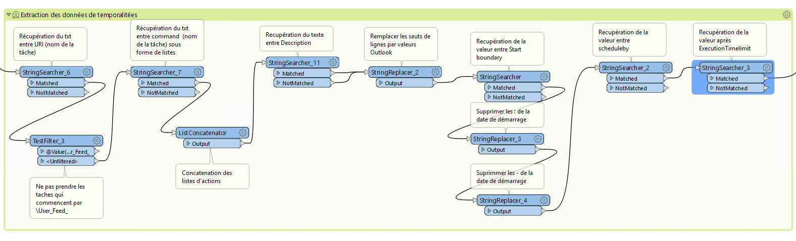{kind=link}
Récupération du texte entre les balises URI (nom de la tâche)
(?<=<URI>)(.*)(?=<\/URI>)
Exclure les tâches qui commencent par “User_Feed_” (tâches par défaut de windows)
Récupération du texte entre les balises command (actions effectuées par la tâche) sous forme de listes
(?<=<Command>)(.*?)(?=<\/Command>)
Concaténation des listes d’actions
Récupération du texte entre les balises Description (Description de la tâche) sous forme de listes
(?<=<Description>)(.*)(?=<\/Description>)
remplacer les sauts de lignes des description par des balises n puis saut de ligne (interprétables par Outlook)
Récupération de la valeur entre les balises StarBoundary (heure et date de démarrage de la tâche)
(?<=StartBoundary>)(.*?)(?=<\/StartBoundary)
Supprimer les : et - de la date de démarrage (interprétables par Outlook)
Récupération de la valeur après balises SheduleBy (programmation par interval : mois, jours, années)
(?<=ScheduleBy)(\w*)(?=>)
Récupération de la valeur après ExecutionTimeLimit (limite de temps avant interuption de la tâche)
(?<=ExecutionTimeLimit>)(\w*)
Récupération de la valeur comprise entre CATEGORIE et . (catégorie de donénes entrantes, sortantes ou flux internes)
(?<=CATEGORIE :)(.*?)(?=\.)
Supression des espaces dans le champs catégorie
2.3 - Création des champs pour le listing excel
{kind=link}
Récupération des valeurs entre DESTINATION et |* (url ou nom de la destination des données)
(?<=DESTINATION :)(.*?)(?=\|\*)
Créer une valeur vide pour les entités qui n’ont pas de destination renseignée
Récupération des valeurs entre DSOURCE et |* (url ou nom de la source des données)
(?<=SOURCE :)(.*?)(?=\|\*)
Créer une valeur vide pour les entités qui n’ont pas de source renseignée
Récupération des valeurs après RESUME et avant la balise /DESCRIPTION (résumé de la tâche)
(?<=RESUME :)(.*?)(?=<\/Description>)
Créer une valeur vide pour les entités qui n’ont pas de résumé renseigné
2.4 - Filtre sur les temporalités

2.5 - Extraction du détail de temporalité

Pour les temporalité Day :
Récupération des chiffres après la balise DaysInterval (interval de jours pour lancement de la tâche)
(?<=<DaysInterval>)(\d*)
Pour les temporalité Week :
Récupération des chifres Entre les balises WeeksInterval (interval de semaines pour lancement de la tâche)
(?<=<WeeksInterval>)(.*)(?=<\/WeeksInterval>)
Pour les temporalité Month :
Récupération du texte Entre les balises Months (différents mois de lancement de la tâche)
(?<=<Months>)(.*)(?=<\/Months)
Création de liste avec les textes de mois extraits
(?<=<)(.*?\/>)
Récupération du chiffre après la balise Day (jour des mois de lancement de la tâche)
(?<=<Day>)(\d*)
Explosion des listes de mois
Pour les temporalité MonthDayOfWeek :
Récupération des chiffres après la balise Week (numéro de semaine de lancement)
(?<=<Week>)(\d*)
Récupération du texte entre les balises DaysofWeek (jours de la semaine pour lancement de la tâche)
(?<=<DaysofWeek>)(.*)(?=<\/DaysofWeek)
Création des valeurs outlook de jours de semaines en fonction des chiffres extraits (nombres et Prefixes)
Récupération du texte Entre les balises Months (différents mois de lancement de la tâche)
(?<=<Months>)(.*)(?=<\/Months)
Création de liste avec les textes de mois extraits
(?<=<)(.*?\/>)
Explosion des listes de mois
2.6 - Mise en forme du détail de temporalité
{kind=link}
Création du numéro de mois correspondant à la valeur de mois extraite
Préfixer les attributs Days et Month en fonction de leur longueur et mise en forme de la date pour Outlook
2.7 - Structuration du texte au format ICS

Pour les temporalité Day :
BEGIN:VEVENT CATEGORIES:Journalier SUMMARY: @Value(task_name) DTSTART;TZID=”Romance Standard Time”:@Value(start_time) RRULE:FREQ=DAILY;INTERVAL=@Value(day_interval) DURATION:@Value(duration) DESCRIPTION:
@Value(description)
LOCATION:@Value(task_actions) END:VEVENT
Pour les temporalité Week :
BEGIN:VEVENT CATEGORIES:Hebdomadaire SUMMARY: @Value(task_name) DTSTART;TZID=”Romance Standard Time”:@Value(start_time) RRULE:FREQ=WEEKLY;INTERVAL=@Value(week_interval) DURATION:@Value(duration) DESCRIPTION:
@Value(description)
LOCATION:@Value(task_actions) END:VEVENT
Pour les temporalité Month :
BEGIN:VEVENT CATEGORIES:Mensuel SUMMARY:@Value(task_name) DTSTART;TZID=”Romance Standard Time”:@Value(start_time2) RRULE:FREQ=YEARLY;BYMONTHDAY=@Value(num_day);BYMONTH=@Value(num_month2) DURATION:@Value(duration) DESCRIPTION:
@Value(description)
LOCATION:@Value(task_actions) END:VEVENT
Pour les temporalité MonthDayOfWeek :
BEGIN:VEVENT CATEGORIES:Mensuel SUMMARY:@Value(task_name) DTSTART;TZID=”Romance Standard Time”:@Value(start_time2) RRULE:FREQ=YEARLY;BYDAY=@Value(num_day2);BYMONTH=@Value(num_month2);BYSETPOS=@Value(week) DURATION:@Value(duration) DESCRIPTION:
@Value(description)
LOCATION:@Value(task_actions) END:VEVENT
2.8 - Ecriture du fichier ics

Dans les paramètres d’attribut du writer, modifier la valeur :
BEGIN:VCALENDAR VERSION:2.0 @Value(text_line_data) END:VCALENDAR
Et enregistrer en destination Text file avec suffixe .ics dans le nom.
{kind=link}
2.9 - Mise en forme Excel

Création de la périodicité et de l’interval
Pour les temporalité Day :
periodicite : journalier interval : Tous les @Value(day_interval) jours
Pour les temporalité Week :
periodicite : hebdomadaire interval : Toutes les @Value(week_interval) semaines
Pour les temporalité Month :
periodicite : mensuel interval : Le @Value(num_day) des mois de : @Value(months)
Pour les temporalité MonthDayOfWeek :
periodicite : mesnuel interval : Le @Value(num_day) de la @Value(week) eme semaine des mois de : @Value(months)
3 - Ouverture des fichiers
Dans outlook, importer le calendrier à partir du fichier ICS créé.
{kind=link}
En cliquant sur un rendez-vous, vous pouvez consulter :
La périodicité des traitements (si paramétrage des catégories dans Outlook : plus bas dans le mail)
Le nom de la tâche (objet)
L’emplacement de l’action effectuée (emplacement)
L’heure de début
L’heure de fin (limite d’exécution du traitement)
Dans le corps du RDV : - La catégorie d’import/export données : données entrantes, sortantes ou partagées/transférées en interne - Le chemin/url sources des données - Le chemin/url destination des données - Une description du traitement
Vous pouvez définir les catégories dans outlook comme ci-dessous pour visualiser la périodicité des traitements en couleur et les modalités d’imports/export de données (entrants, sortants, interne).
-> Dans Accueil , indicateurs , classer
{kind=link}
Dans Excel, ouvrir le fichier .xls
{kind=link}